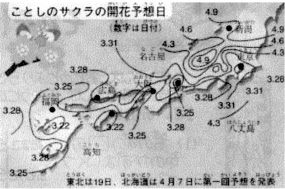

Uyanmaya Aklı Ermeyen Bir Rüya(lı)yım
Rabb-i Rahimimiz’den Mûsa Aleyhisselâm’ın diliyle öğrendiğimiz duaya “Rabbim sadrımı şerh eyle!” diye başlıyoruz. “Rabbim, göğsümü genişlet” diye meal veriliyor çoğu kez. “Sadr”, “göğüs”ten, “kalp”ten fazlası olmalı... “Şerh” de, “genişletmek”ten çok daha geniş olmalı… Her neyse “sadr”ım, “şerh”e muhtaç olmalı ki, bunu istememi istiyor beni benden iyi bilen Rabbim. Demek ki, olmam gerekenden daha az’ım. Demek ki, yayılmam gereken yerden daha dar bir yerdeyim. Demek ki, yükselmem gereken yerden daha aşağıdayım. Demek ki, olmam gerektiği kadar çok olamadım. Demek ki, ezelden yazılmış bir mektup olmalı kalbim ki daha zarfım açılmadı, okunmadım. Demek ki, ebede uzanan aşkları büyütüyorum göğsümde ama henüz vefasız buluşmaların kapanındayım. Demek ki, son’suz bir an’ın kalbinde saklı huzurum ama gündelik telaşlarla, an’lık hazlarla oyalanmaktayım. Demek ki, bir rüyadayım ama rüyada olduğunu unutmuş, rüyayı gerçek sanan, uyanmaya aklı ermeyen bir rüya(lı)yım.
“Rabbim, sadrımı şerh et...”
Az Değil Bir
Ne zaman havaya girsem, şöhretin şuh çekimine kaptırıversem kendimi, birisi kulağıma usulca fısıldasın isterdim şu kabir kapısı gerçeğini. Ne zaman alkış tufanından, kalabalığın iltifatından, imza kuyruğunun uzamasından kendime pay çıkarsam, birisi gözlerime ı / şıkça göstersin isterdim şu kabir kapısı fotoğrafını. Ne zaman, “dinleyici yok ki...” diye sitem ettiğimde, diziyi terk ederek, derbi maçını unutarak, boş koltukları utandırarak karşıma gelen “az”ıcık insanın gözünde azaldığımı zannetsem, birisi kalbimin zarlarına ipekçe değdirsin isterdim şu gaybî teveccühü, şu görünmez alkışı ve şu sahici izdihamı:
“...Rıza-yı İlâhî ve iltifat-ı Rahmânî ve kabul-ü Rabbânî öyle bir makamdır ki, insanların teveccühü ve istihsânı, ona nisbeten bir zerre hükmündedir. Eğer teveccüh-ü rahmet varsa, yeter. İnsanların teveccühü, o teveccüh-ü rahmetin in’ikâsı ve gölgesi olmak cihetiyle makbuldür; yoksa arzu edilecek bir şey değildir. Çünkü kabir kapısında söner, beş para etmez.”
Dua Ufku
Bu dünyada sevdiğine sarılanAhrette sorgu sual yoğ imiş
Dua, nedensellik anlayışımızla çok yakından ilgili. Sebebin sonucu garanti ettiğini sanacak denli determinist isek, sonuç için dua etmeye, hatta “inşaallah” falan demeye gerek yok. Yok eğer, sebepler istediğimiz sonucu sağlamaktan çok uzak duruyorsa, “İşimiz Allah’a kaldı!”, “Dua ile gidiyor bu araba!” diyoruz. Oysa sebeplerin sonuç üzerindeki etkileri sadece görsel bir alışkanlık. Hep öyle göründüğü için, hep öyle olacak sanıyoruz. “Meyve ağaçtan gelir, çünkü hep öyle gördük.” “Tohum, toprak, su, güneş ve hava ile filizlenir. Neden mi? Hep öyle gözlemledik de ondan!” Öyle görünüyor olması, öyle oluyor olmasıyla aynı mı peki? Ağacın dallarında, köklerinde, gövdesinde, yapraklarında, çiçeklerinde meyveyi ağza göre tatlı, burna göre rayihalı, göze göre alımlı, bedene göre şifalı edecek bilgi, şefkat, kudret var mı ki? Yoksa bir alışkanlıkla mı geliyor o birbirinden alımlı meyveler? Cansız toprak can verebilir mi tohuma? Havada tohumu yönlendirecek bilgi mi akıyor? Suda tohumu filizlendirecek bir kudret mi saklı? Peki ya ışıktan mı kopyalıyor başaklar biçimlerini? Sebep ile sonuç arasındaki mesafe o kadar sonsuz ki... Sebeplerin sonucu kendi başlarına var etmeleri o kadar imkânsız ki... Her defasında işimiz Allah’a kalıyor. Her işimiz bizi Allah’a katıyor. Her teşebbüsümüz dua ile sonuca varıyor.
“ ‘İnşaallah’ Derse Yakaran, İnşa Eder Yaradan”
Benimle olduğunu zannettiklerim benden izin almadılar ki hayatıma girerken izin alarak çıksınlar. İzin alarak sahiplenmedim ki izin vererek bırakayım. Kıtlıktan çıkmış ırgat gibi saldırırken tarlaya düşünmeliydim, bunların bir sahibi olacaktı aslında. Gelip el koyacaktı tarlasına. Ta ki ben kim olduğumu hatırlayayım. Ve böylece tarladan çıkıp kalakalınca ortada, aslıma dönüp kendime geldim, haddimi bildim. Her olayın merkezi sandım kendimi başrol oynadığıma kandığımdan beri. İşsiz güçsüz bir ırgattan pek de farklı değilmişim meğer. Gözümde büyütüp kendimi işe yarar bildiğim ben o ahmak adamın yaptığını yapmışım yıllarca: Hani gemiye binmiş yüküyle de yol boyunca sırtından indirmemiş... Dert edindiklerim, yük bildiklerim bırakıversem kendi hallerine gideceklermiş. Sahiplenmeseymişim onları, sadece “emanet bırakıldıklarını” hatırlasaymışım, bu kadar yükün altında ezilmeyecekmişim.
Bunca şeyi anlayınca, “inşaallah” çoktan dilimin en zarif duası oldu. Yeniden kabul edilmenin beklentisiyle “inşaallah” derken içten içe, ne sunulan tarlalara baktım ne de başka bir şeye. Zaten iyisinden bir tevekkül borçluyum Rabbime. Sen de yeter ki onu an, çünkü “İnşaallah” derse yakaran inşa eder Yaradan.
Erdemli ziyaretim sırasında Meryem Betül’e verdiğim ev ödevine seçilen başlık bile tam puanı hak ediyor, değil mi?
İn(diril)iş Duası
Uçakların iniş duasını Kerim Buladı hocam sayesinde çözdüm. “Acaba olur mu?” diye düşünüp durduğum eşsiz anı İstanbul-Diyarbakır uçuşunda yaşadık. Önce, Ankara üzerinde, güneş ışıklarının doğudan batıya yansımasıyla ayna gibi bizi selamlayan Tuz Gölü’ne selam verdik. Sonra az ilerde Kayserililerin yanı başında dimdik bir ayet olarak bekleyen Erciyes Dağı’nın selamını aldık. (Dağları sevmek, dağlarca sevildiğini bilmek, dağlarla selamlaşmak sünnettir: “Uhud bizi sever, biz Uhud’u severiz.” der ya Peygamber [asm]). Ve belki de ilk defa, hem Diyarbakır inişinde, hem İstanbul inişinde, Nuh Aleyhisselâm’ın iniş duasıyla yere dokunduk:
“Rabbim, beni mübarek bir menzile indir; indirenlerin en hayırlısı Sensin” [Mü’minûn, 29]
Leylâ’sız / ısı: Mevlâ
Can ile ten gizli değil birbirinden,
Lâkin canı görmeye izin yok tenden.
Bu âlem ruh ile cesedin birlikte olduğu, mânâ ile maddenin eş olduğu bir âlemdir. Görünmeyen gayb âlemi görünen şehadet âlemine komşudur. Ancak âlemdeki her şeyi bir başkasını gösterir bir harf olarak görmeyen için, gaybı görmeye izin yoktur. Oysa görünen âlem görünmeyene şahit olmak için yaratılmıştır. Ancak tende kalıp canı aramayan, görünen âlemin şahitliğine perde olmaktadır.
Sözde Günahsız…
Pişmanlık, eğer samimi ise en üst seviyede ahlâkî bir kategoridir. Kanaatimce, günah işlemiş ve tövbe etmiş bir adam, hiç günah işlememişlerden -ki böyleleri var- daha iyidir. Sözde günahsızlara daima bir antipatim olmuştur. Böyle olabilmek için büyük bir istek duymama rağmen, kendimi bu güvensizlikten hiç kurtaramadım. Belki de bunun sebebi, günahsız da, mükemmel de olmayışımdır.
Aliya İzzetbegoviç’ten “günah işleyip günahından tövbe edenler”in “hiç günah işlememişler”e yeğ tutulduğunu belirten “kutlu söz”ün paralelinde iddiasız ve insanî bir yorum. (Özgürlüğe Kaçışım, Zindandan Notlar, Klasik Kitaplar, Hasan Tuncay Başoğlu çevirisiyle)
Kanatları Var Kalbinin…
Kanatların varsa, toza balçığa bulanmamalısın. Kanat dediğin havaya bulanmalı ki seni göklere, yücelere alıp götürsün. Dünya, “aşağı” demektir. Kanatları olana aşağıya razı olmak düşmez. Cennetin semâsında kalbinin kanatlarını sonsuzluk aşkıyla açmak istiyorsan, “aşağı”dayken “aşağılık” işlere girişme. Kalbinin kanatlarını alabildiğine açmaya ne yer var burada ne de gök. Şimdilik “aşağı”dasın; hep “aşağı”larda kalmaya heveslenme.
Dünyaya razı olmak: Ne talihsiz bir zahitlik!
Ân / Zaman / Savrulan
Ömrün, elindeki tohumlara benzer. Günler aktıkça tohumlar elinden düşer, dökülür, toprağa saçılır. Tohumları avucunda tutman mümkün değil. Sen istesen de istemesen de, tohumlar harcanır, azalır, tükenir. İyisi mi, nerede durduğuna bir bak. Çorak bir toprak üzerinde misin? Tohumların düştüğü yer sana bir şey vaad etmiyor mu? Göğün yağmurları tohumlarının kabuğunu çatlatmaya yanaşmıyor mu? Işıklar tohumlarının elinden tutmuyor mu? Verimli bir toprak bul kendine. Aç avuçlarını. Aç avuçlarını ki ömrünün tohumları seni yeni ve sonsuz baharlara taşısın. Aç avuçlarını ki, yağmurlar sana rahmet olsun. Savur tohumlarını ki, rüzgâr sana müjdeci olsun. Toprağa bırak ömrünü ki, yerin ve göklerin nuru alnından tutsun; sevdalarını sonsuza taşısın.
Dua toprağında filizlendir kırık sevdalarımızı, ey Fâtır-ı Hakîm!
Kıyılarından Çekilme Duanın…
“Sepet kendisini suyla dolu gördü de, nazlanıp başını denizden çekti.”
Sepet denize dalmışken, sanır ki, denizin hepsi içindedir. Sanır ki, denizden aldığı kendine kalacaktır. Sepet dediğin, teni delik deşik bir kaptır; su tutmaz. Denizden başını çeker çekmez suyunu yitirir; kuru kalır. Sen sen ol; “doydum” deme. Sen sen ol; “oldum!” deme. Sana düşen hep denizde kalmaktır. Sende olan denizdendir ama deniz değildir. Sende olanın sende kalacağını sanma. Sana düşen, kendini doldurmak değildir. Denize dal ve orada kal yeter. Sular içinden her daim geçsin yeter; böylece hep temiz kalırsın. Ne kadar bildiğin değildir önemli olan; ne kadar derin hissettiğindir. Ne kadar çok yazdığın değildir önemli olan; ne kadar içten yaşadığındır. Kendini suyla dolu görüp de, başını denizden çekme! Sana kalan sende kalan olmayacak; sana kalan sana dokunan olacak. Sana kalan seni doyuran olmayacak, sana kalan seni insan kılan olacak. Sana kalanla seni doyuran arasındaki boşluğun, sandığında dua incisi olarak saklanacak.
Tutup Vermeyen, Vermeye Tutunamaz
“Cömertlik cennetten uzanan bir servi dalıdır.”
Öyle demiş Sevgililer Sevgilisi[asm]. Sanma ki, cömert olmakla yeni bir şey inşa ediyorsun. Zaten var olan kutlu servinin dalına tutunuyorsun. Sanma ki, cömert olmakla kendinden bir şey eksiltiyorsun. Sen sana verileni veriyorsun; böylece kendini tamam eyliyorsun. Cimri, derin bir aldanış içindedir. Kendine verileni kendinde kalacak sanır. Kendini, elinde olana dilenci eder. Minneti eşyayadır; onların varlığına yalvarır. Elindekiler giderse, eksileceğini sanır; her daim korku içinde kalır. Kendine verildiğini bilen, elindekileri eksilten cennetten uzanan servi dalına asılıdır. Cömertsen ellerin her daim doludur; çünkü sonsuz meyvelere gebe çiçekleri sarıp sarmalamaktadır.
“Senin verdiğini bilerek verenlerden, verdiğini Sen yine verirsin diye verenlerden, verdiğini vermesen de Sen yetersin diye verenlerden, verdiğini Senin adına verenlerden eyle beni.”
Gölge Avı
Karınca bir buğday tanesini görür; ona razı olur. Bir tane üzerinde oyalanır. Onun üzerine titrer. Varı yoğu bir buğday tanesidir. O gidince her şeyini kaybedeceğini sanır. Mutluluğunu ona bağlar. Huzurunu onun yanında hisseder. Karınca buğday tanesinin bir harmandan haber verdiğini bilseydi, bunca bağlanır mıydı bir taneye? Karınca, bir buğday tanesinin nice buğday tarlalarını haber verdiğini anlasaydı, hiç oyalanır mıydı bir tane üzerinde? Şimdi, kendini neye bağladığına bir bak! Varın yoğun nedir bir hesapla! Neyin peşindesin bir düşün! Neye razı olduğunu bir gör! Üzerine titrediğin şeyleri bir sırala! “Ahiretin tarlası” iken dünya, bir buğday tanesine mi kandın? “Ebedî güzelliğin âyinesi” iken dünya, aynaya kanıp ışığa uzak mı kaldın? Ahmak avcı gibi, kuşu unutup gölgesinin peşine mi düştün?
Gölgeden güneş haberi alan gönlü açıklardan eyle beni Rabbim.
“Güzellik” Hep Müslüman…
Allah’ım, hatalıysam beni affet, ama iyi bir Hıristiyan’a kötü bir Müslüman’dan daha çok saygı gösteriyorum; sırf Müslüman (İslamî değil) olduğu için bir şeyi savunamam, yine sırf başkasına ait diye iyi bir şeyi göz ardı edemem.
“Bilge Kral” Aliyâ’nın Zindandan Notları’na kaydettiği bu özrü paylaşmadığımız (bu özrün altında saklı İslamî / insanî inceliği ıskaladığımız) için nice özürler borçluyuz. Parantez içi uyarıya dikkat: “Müslüman” olanla “İslamî” olanı ayırıyor Bilge Kral. Müslümandan yana olmak İslamî olmayabilir; İslamî olan her zaman Müslümanın yanında olmayabilir. Ama başkasına ait de olsa, “iyi” ve “güzel” olan Müslümanın yitiğidir.
Akşehir
Akşehir Belediyesi’nin amblemini görünce aklıma düştü.
Nasreddin Hoca eşeğe niye ters binmiş olmalı ki?
Eşek, insanda “nefs-i emmare”yi, yani kötülüğü isteyen nefsi temsil eder. Beşer olarak her birimiz içimizde bu nefsi, yani hayvanî yanı taşırız. Eşek, nefsin hayvanlığına en çok uyan hayvandır. Çünkü, eşek acıkınca anırır. Bencildir. Kendinden başkasını düşün(e)mez. Nasreddin Hoca eşeğe ters binmekle, kötülüğü isteyen nefse muhalefet ettiğini söylemek istemiştir. Yani, eşeğe biniyorum ama onun tersi yöne bakıyorum. Nefse binmemiz gerekir, çünkü ancak o nefis sayesinde nimetlerin tadını alabiliriz. Nefisle birlikte yürürüz ama ters yönde otururuz.
Bu espriyi anlattığımdan beri “Hocam, eşeğe ters binmeye devam edeceğiz!” sözü veren Akşehirli İbrahim kardeşimin notu hâlâ aklımda.
Hep “İndiriliyor” Değil miyiz?
“Kaptanım,” dedim, “landing / iniş duası yaptık geçenlerde, biliyor musunuz?” dedim Nusret Hacıoğlu’na: “Rabbim, beni mübarek bir menzile indir; indirenlerin en hayırlısı Sensin.” [Mü’minûn, 29].
Meğer hepten bilirmiş ve de yaparmış ki, heyecanıma yeni bir heyecan kattı: “Her birimizin başlangıcı olan yumurta ve spermin rahime inerken yaptığı dua da aynen budur: Rabbim beni mübarek bir menzile indir. Hem sonra, hepimiz dünyaya indiriliyor değil miyiz? Her bebeğin de duası böyle değil midir?” Hem sonra bu satırlar da akıldan sayfaya indirilmedi mi? Hem sonra bu satırları okuyan da aklını kara harflerin hatırına ak sayfaya indiriyor değil mi?
“Gökçekimi”
Sevgili kardeşim Mücahit Bilici’nin ilk kitabının adı Gökçekimi. Mücahit, yeryüzünde gördüklerini göksel bir nazarın çekimine tutuyor kitabında. Avuçlarımızdan esmâ-i hüsnânın göğüne yükselen dualar da gökçekiminde değil mi? Kalbimizin sızılarından ince ince akıp biriken yakarışlarımız da göksel çağlayanlara dönüşmüyor mu yukarılarda?
Dua: Yukarı akan nehir.
Dua: Denizleri göğe taşıran yağmur.
Dua: Yerden göğe doğru sağılan söz bulutu.
Kendime Sarılıp Ağlayayım
Can dostum, fikir yoldaşım Yusuf Özkan Özburun’un, “hüznün ve şefkatin üstadına” atfettiği şiirinin içinde kekremsi bir dua pınarı şırıldıyor. Kendine sarılıp ağlayan Üstad’ın nicelerinin ağlayışını ince ince şefkate iliklemeye devam ediyor. Risale-i Nur’un satırları hâlâ burada, hâlâ kıpır kıpır konuşuyor:
PITRAKLI BİR TARLADAYIM işte varım yoğum
çelimsiz bir çalıyım çınarların gölgesinde
bırakırsan savrulurum tanrım tut köklerimden
ellerimden değil ayaklarımdan tanınayım,
kendi söküğünü kendi diken bir adam gibi
kendime sarılıp ağlayayım.
Eylemsel Dua
Muhterem Abdurrahman Dilipak’ın yoğun politik gündem sırasında, telaşlı küresel öncelikler arasında, yapacaklarımızı, unuttuğumuz kalbî gündemimizle irtibatlandırması ne kadar şaşırtıcı ve sarsıcı: Abdurrahman ağabeyin aşağıdaki cümleleri [bir eylemsel] dua[olan çabalama]nın eksenini hak ettiği yörüngeye oturtuyor:
“...Sonuca ilişkin umutlarınız olsun, ama aslolan bir imtihandır. Ne sorunun çözülmesine sevinin, ne de çözülmemesine yerinin. Bütün bunlar bir imtihandır, bunu asla unutmayın! Biz –hâşâ- Allah’ın yetmeyen gücüne güç, yetmeyen aklına akıl yetirecek değiliz! Her şey yollu yolunda. Eğer siz [bir] sorunun çözümü için parmağınızı [ya da dudağınızı] kımıldatmamışsanız, bu sorun çözülse de bunun size bir faydası yok; eğer siz üzerinize düşeni yapmışsanız ve sorun çözülmemişse de, siz cenneti hak ettiniz, ne mutlu size, siz çalıştınız ve başardınız, bu da başka bir imtihandır. Unutmayın, Allah sizi mallarınızla, canlarınızla ve sevdiklerinizle; kimi zaman arttırarak, kimi zaman eksilterek imtihan edecektir. Görelim Mevlam neyler, neylerse güzel eyler.”
Dua / da Dua
“DUA ETMEK YÜREK İSTER” diyor Yusuf Özkan Özburun. Bunu derken, içimizde saklı ve dahi giderek büyüyen dua boşluğuna gözü kararmadan bakabilecek cesarete çağırıyor bizi. İçinin gizli saklı sancılarıyla büyüyen “ah!” uçurumlarını gündelik telaşelerin brandalarıyla kapatanlar, yüreklerini de kaybeder yakarışlarını da:
Kalbimiz dua etmek ister. Ancak ve ancak göğsüne kalbinden başka dua mecmuası takmayanlardır ki dua etmek nimetine liyakat kesb eder. Zerreden küreye, arştan ferşe, bir şeyden her şeye şu varlık sahnesini bir dua bilmek, bir duada duymak, bir dua olarak görmek insana düşer.
“İşimiz duaya kaldı” diyen müstehzi gafiller, aslında tüm âlemi ve insanı içine alan nihai bir hakikate işaret ediyorlar. Mesele, ‘iş’ten ne anladığımızda; ‘iş’in bizde bitip bitmediğini, Allah’ın daima bir ‘iş’ (şe’n) üzerinde bulunduğunu, içimizin ince derdinin ne olduğunu, dünyaya ne iş için geldiğimizi, duasız bir hayatla hayatın memata mematın hiçliğe dönüşmesinin işten bile olmadığını kavramakta düğümleniyor. İçimin tenhası böyle düşünür, böyle söyler…
Su, toprakla buluştuğunda dua eder. Toprak, tohuma kavuştuğunda dua eder. Yuvadaki yavru kuş çığlık çığlığa dua eder. Hasta çocuğunun başını okşayan müşfik annenin elleri, rızık rızık diye toprağı belleyen rençberin tomur tomur biriken alın teri dua eder. Tur’da Musa (a.s) dağın duasına eşlik eder, Yunus (a.s) üç karanlık içinde münacaat eder, Eyyub (a.s) kalbi ve dili için necat diler, Muhammed (s.a.v) kendini bırakır, ümmetim ümmetim diye dua eder. Duayla başlar her şey duayla biter ve hayat iki dua arasında ince, titrek bir çizgi değil de nedir?
Biz Uyurken…
Haberin günübirlik küresel kısır döngülere mahkûm edildiği bir çağda, bir haber sitesinden ummadığım bir haber çıktı karşıma. Sağ olasın Yaşar İliksiz! www.haber7.com’daki haberiyle ne kadar derin bir uykuda olduğumuz konusunda bizi uyandırdı:
“NASA’nın 2003 yılı Şubat’ında uzaya yerleştirdiği Columbia uydusu inanılmaz bir anı fotoğraflamayı başardı. Dünya ufkunda gecenin bittiği ve günün ilk ışığının atmosferin en dış tabakasına çarptığı “o an” Columbia uydusu tarafından görüntülendi. Dünyanın tümüyle karanlığa gömülmüş yüzünün ışıkla buluştuğu o ilk anda, güneş ışığı dünyanın en dış katmanında parçalanarak görünmez olan atmosfer tabakasında işte böyle yay şeklinde parçalanıyor. Ve o ana dek var olan ama görünmeyen o tabaka böyle naif bir görüntüyle varlığını gözler önüne seriyor.”
Bu arada biz ne mi yapıyoruz? Uyuyoruz aşağıda; yukarıda olan bitenden habersiz...
Uyuyoruz aşağıda; yukarıda olan bitenin bizim için olup bittiğinden habersiz. İyice karanlığa gömüyoruz başımızı; yukarıda olan bitenin bizim için olduğundan haberli de olsak, hayretsiz ve minnetsiz.
Uyuyoruz aşağılardaki uyanıklıklarla; ancak binlerce yıl sonra görebildiğimiz bu manzaranın dünyanın her noktasında her an olduğunu (çünkü her an gündoğumu vardır dünyanın bir boylamında) hâlâ daha fark etmeden yürüyoruz.
Dünya ufkunda karanlığı parçalayan ışık gönlümüzün ufkuna bir hayret, bir minnet, bir heybet ışığı olsun düşmez mi ey “doğuların ve batıların Rabbi?”
Dua: Ateş
Neyin sadâsı ateştir hava sanma,
Kimde bu ateş yoksa yazık ona.
Ney, ayrılığın acısını seslendirmededir; o halde ona söylettiren hava değil ayrılığın ateşidir. Bu ateş olmasaydı, ney böylesine ağlamazdı. Gurbette olduğunu fark etmeyen için de ayrılık ateşi diye bir şey yoktur; sılayı özlemeyenin sesi sedâsı çıkmaz. Sevgili’den ayrılık derdi olmayanın diline yakarış değmez. Sürgün olduğunu bilmeyen ateşsiz ve heyecansızdır; onun dudağına aşkın sözü erişmez, onun kalbine aşkın ateşi düşmez.
Ah!
“Günahından tövbe eden, hiç günah işlememiş gibidir.”
– Sahiden mi?
“Günahından tövbe eden, hiç günah işlememiş gibidir.”
– Ciddi misiniz?
“Günahından tövbe eden, hiç günah işlememiş gibidir.”
– Size kim söyledi ki?
“Günahından tövbe eden, hiç günah işlememiş gibidir.”
– Ben... Şimdi… Tövbe etsem... Olur mu ki?
“Günahından tövbe eden, hiç günah işlememiş gibidir.”
– İçimde bir ateş bir ateş ki, Efendim, hiç sormayın! Yanıyor, yakıyor. Yanıyor, yakıyor. Söner mi, dersiniz?
“Günahından tövbe eden, hiç günah işlememiş gibidir.”
– Özür diliyorum Rabbim... Bin özür; milyonlar özür... Çok utanıyorum; çok mahcubum; çok, çok... N’olur affet beni, affettiğini bildir. Affedildiğimi hissedeyim. Söz veriyorum (veriyorum mu ki?) bir daha asla! Bir daha asla, bir daha asla, bir daha asla, bir daha asla...
“Günahından tövbe eden, hiç günah işlememiş gibidir.”
– Hiç günah işlememiş gibi mi gerçekten... Yani, günah işleyip de affedilmiş bile değil. Sanki hiç işlememiş gibi mi? Hiç! Hiç! Hiiççç! Affedildim mi şimdi?
“Günahından tövbe eden, hiç günah işlememiş gibidir.”
– Hiç günahsızlar nasıl yaşarsa, öyle mi yaşamam gerekiyor şimdi?
“Günahından tövbe eden, hiç günah işlememiş gibidir.”
– Efendim, siz miydiniz?
“Günahından tövbe eden, hiç günah işlememiş gibidir.”
– Sesiniz, sesiniz ne güzel Efendim! Bir daha söyleseniz! Bir daha!
“Günahından tövbe eden, hiç günah işlememiş gibidir.”
– Yüreğime su serptiniz Efendim! Ne kadar serinledim bir bilseniz.
“Günahından tövbe eden, hiç günah işlememiş gibidir.”
– Efendim, siz ne güzel müjdecisiniz! Fakiri sevindirdiniz.
“Günahından tövbe eden, hiç günah işlememiş gibidir.”
– Efendim, Siz… Siz… Siz... Siz... Siz... Ne güzel elçisiniz! Niye buraya kadar zahmet ettiniz!
Ah!
Kıyamet Aşısı
“Günahların öyle bir özü, cevheri vardır ki, onlar ancak asıl kaynaktan gelen tepkiler ve direnişlerle yok edilebilir, değiştirilebilir. Kalbinin bütün samimiliğiyle Allah’ın önünde yere kapanmış bir müslümanın günahı, ansızın gelen bir şimşeğin yıktığı bir ağaç gibi devrilir, yanar tövbe zamanı. Müslüman da, bu kül yığınının içinden taptaze ve yemyeşil bir bahar sürgünü gibi çıkar ve gider. İşte dönüşsüz tövbe...”
Sezai Karakoç, Kıyamet Aşısı’nda tövbenin kıvamını dilden kalbe doğru taşırıyor böylece. “Tövbe-i nasuh” içten gelen tövbe demek. “Tövbe-i nasuh” kalbin pişmanlık ateşinden sıçrayıp dile köz olan söz demek. “Tövbe-i nasuh” ruhun labirentlerinde çalkalanan ürperti denizinin gözyaşı olup taşması demek. “Tövbe-i nasuh” Rabbine verdiği kulluk sözünden dönme utancını, Rabbinin huzurunda başkasına bakma mahcubiyetini yüzünün her noktasında boncuk boncuk ter edip damıtmak demek. Dolayısıyla, “dönüşsüz tövbe” sözden ötedir, dili damağa değdirip “estağfirullah” demekten fazlasıdır. Dolayısıyla, “içten tövbe”, yani “tövbe gibi tövbe” dilin eylemi değildir; kalbin eylemidir. Kalbin! Dilin ucundan değil, kalbin içinden seslenir tövbe. Günah kalbin gafletiyle başladığına göre, yine kalbin uyanışıyla biter, silinir, bağışlanır, yanar, kül olur.
Ya Gaffâr, ya Afuvv, ya Rahîm, dilime sahiden tövbe eden o kalbin sözlerini taşı / r!
Ben sonsuz acıkıyorum; tutup kendimi yiyorum. Keskinliğim hırslarımı kesmediğinde… Tüketirken tükeniyorum…
“Nefis” Yorum / u
Mesnevî-i Nûriye’den nefsi bile kıskıvrak yakalayan şu “nefis” yorumu karlı bir Trabzon seherinde yeni / den okudum. B. Said Nursî’nin ne kadar şefkatli bir bilge olduğunu da okuyabiliriz bu pasajda. İnsanı düştüğü yerden kaldırıyor Said Nursî. “Kalk da bana kadar yürü biraz!” demiyor. Nefisperestlikte boğulmuşsan, boğulduğun yere kadar uzatıyor Sözler’ini. Nefisperest herkesin anlayabileceği berrak, yakın, duru ve empatik bu dil örneğini, burada zikretmezsem, bütün nefislere haksızlık olur:
“...seni nefsini sevmeye sevk eden esbab:
1. Bütün lezzetlerin mahzeni nefistir.
2. Vücudun merkezi ve menfaatin madeni nefistir.
3. “İnsana en karib (yakın) nefistir” diyorsun.
Pekâlâ. Fakat, o fâni lezzetlere mukabil, lezâiz-i bâkiyeyi veren Hâlıkı daha ziyade ubudiyetle sevmek lâzım değil midir? Nefis vücuda merkez olduğundan muhabbete lâyık ise, o vücudu icad eden ve o vücudun Kayyûmu olan Hâlık, daha fazla muhabbete, ubudiyete müstehak olmaz mı? Nefsin maden-i menfaat ve en yakın olduğu sebeb-i muhabbet olursa, bütün hayırlar, rızıklar elinde bulunan ve o nefsi yaratan Nâfi’, Bâki ve daha Karib olan, daha ziyade muhabbete lâyık değil midir?
Yoo! Bu kadar da olmaz, vazgeç şu kendine hayranlıktan. Ama hoyratı da olma emanetlerin. Emanet (ama net!) bu nefse / kafese sarılmanın uçurumu korkutmuyor mu seni! Yoo! Yoo! Bir yanlış “sarılış” var bu işte! Bi’ yeni / den bak! Haydi!
Kalbin Gecesi / Gündüzü
Mesnevî-i Nûriye’den yine:
“...kalıbını ışıklandıran, kalbini tenvir eden, ancak leyl ve nehârı birbirine kalb eden Fâtır-ı Hakîmdir.”
“Kalıp” ve “kalp” tepeleri arasına kurulmuş bir cümle. Işıklandırma / tenvir etme yörüngesine oturmuş bir bakış. Leyl ve nehâr (gece ve gündüz) dönüşümü ekseninde, “geceden gündüzü, gündüzden geceyi çıkaran” mealli ayetlerin anlamına bulanmış bir ifade. “Kalb” kelimesini, kök anlamı olan kalb edilme, yani değişip dönüşme, sürekli inkılaplar içinde olma üzerinden yeniden inşa eden bir kurgu. Kalıbımızın ışıklandırılması gece ve gündüzü birbirine kalb eden sayesinde ise, kalbimizin küresinde nûrun sürekli tutulması da O’nun elindedir diye düşündürmeye ayarlı ince bir tefekkür. Ve en önemlisi, kalıbın ışıklandırılmasını, kalbin tenvirini, leyl ve nehârın kalb edilmesini paralel ve hikmetli bir yaratış olarak görüp, birbirine şahit olarak gösterip, “Fâtır-ı Hakîm” isimlerini canlı görüntüler üzerinde oku(t)mak...
“Din Günü”: Bugün
Sebepler susar oruçta. Çokluk bire iner. Çokça hazır olanlar tükenir. Bolca el altında tutulanlar faydasızlaşır. Yalnızlaşırız. Eşyanın desteği koltuğumuzun altından çekilir. Tekilleşiriz. Bir gurbete düşmüşçesine, eşyanın uzağına atılırız... Kalabalığın ortasında; yalnız kalırız. Her şey var ama bize faydasız. Her şey burada ama bizden habersiz... Çokluğu susturup, Bir olanın emrine kulak kabartırız oruçla. Sebeplerin şımartmasından yüz çevirip sebepsiz Var Eden’in iznine ayarlarız kalbimizi. Eşyanın içinde kaybolmuşluğumuzu yırtarız. Kentin boğuculuğundan sıyrılırız. Dar zamanların duvarlarından dışarı atarız kendimizi. Silikleşmiş varlığımızı, her şeyi bir kenara itmenin ayrıcalığı ile yeniden biliriz, yeni baştan bileriz. Varlığın göğsünde taze bir heyecanla çarpan kalp gibi yeniden ölçüp biçeriz kendimizi. Her şeyin faydasızlaştığı, her şeyin sustuğu “din günü”nde, “hesap sorulacak adam” imtiyazı ile tek başına ayakta tutulmanın resmini tamamlarız. Böylece, “Din Günü’nün Sahibi”iyle tanış eder bizi oruç.
Hıçkırık: Sonsuzluğa Tanık
Charles Baudelaire’in Kötülük Çiçekleri’nde buruk ve belki umutsuz bir yakarış havası seziyorum. Sancılı her yürek bir dua kazanıdır. Çelişkileri dillendiren bir kalp her daim fena / beka eşiğini adımlamaktadır. İnsanın iç acılarının toplamı dua ederse, acının mürekkebine bandırılmış her şiiri, cevabı dua olan sorular olarak okumak yerinde olur diye düşünüyorum:
Çağdan çağa yuvarlanarak sonsuzluğunun
Kıyısında dinen bu ateş gibi hıçkırık,
Tanrım, çok açıktır ki yüce onurumuzun
En güvenilir tanığıdır; en gerçek tanık.
Ancak sonsuzluğun kıyısında dinen bir hıçkırıktır tüm insanî sancılar. Çok açıktır ki, bu, ancak bekâ ile doyacak onurlu / izzetli bir kalbi taşıdığımız içindir göğsümüzde. Ve bu kalp en güvenilir tanıktır ebede…
Bir de şu cümlenin eş(l)iğinde okusak şiiri:
“Bütün firaklardan gelen feryatlar, aşk-ı bekadan gelen ağlamaların tercümanlarıdır.”
Nerede solgun / solmuş bir çiçek görsem… Nerede bir öksüz / yetim… Nerede, nerede, nerede… Sensin derim Sen; her yı(ğı)ldığımda her yanımda esen… Sevincimin devamının Sende olduğunu bilmek, ne güzel ne doyumsuz haller öyle… Öyle…
Dua Sızı; Hak Neylesin Duasızı…
“Mûsa [as] (...) gölgeye çekildi ve “Rabbim, doğrusu, bana indireceğin hayra öyle muhtacım ki...” dedi.
Mümkünse, bir an empati yapıp bir insan olarak Mûsa Aleyhisselam’ın yerine koyalım kendimizi: Yeryüzündeki bütün ümit ışıkları sönmüş, cümle dayanaklar yıkılmış... Bu dua cümlesi, bir insanın bütün varlığıyla dua eden bir avuca dönüştüğü hale denk geliyor. Avuçlarında sadece acz ve fakr var; başka hiçbir şey yok. İstemekten ibaret bir insan... (Yazık ki, meallerin çoğu o hali yansıtacak cümle kurgusundan uzakta... Hem yakın olsa ne yazar ki... İfadelerin kalıbı, kelimelerin kalbi yetişmiyor kelâm-i ilahînin anlam göğüne...)
Nedense hep “görünür” bir şey arıyoruz isteyecek, istemeye değer. Bir de sadece dua ile olur mu diyenlerin içinde yaşamışsak biraz… Dua ile aramıza girenler olmuşsa… Allah ile kul arasına girilmez diyenler, böyle diye diye Allah ile kulun duası arasına girmişlerse… O zaman biraz dudak bükerek dua ile “dudak” olan o yanımız / uyanmamız gafletin kapısını aralar olmuş. Dua sızı; Hak neylesin duasızı…
Ahiret’le Yaşayan Ahirette Yaşar
Hattının hatırına okuduğum bir Kur’ân mealinde ilk gözüme çarpan ve beni meal sahipleri (ve de okuyanları) hakkında duaya sevk eden bir cümle:
Sebe 8’den: “Ahirete inanmayanlar (orada) azaptadırlar ve (çünkü onlar burada haktan) uzak bir sapıklık içindedirler.”
Mealdeki ilk paranteze (orada) dikkat: Ahirete inanmayanların azabı orada, yani ahirette niye başlasın ki? Oysa onlar ‘burada’ “haktan uzak” bir sapıklık içindedirler. Burada haktan uzak olmak burada azap vermeye başlar. Eğer dalâlete ‘ora’yla sınırlı bir azap biçiyorsak, ‘burada’ dalâlet halinin sorunsuz ve çelişkisiz olduğunu ima ediyor olabiliriz. O zaman da, bizi her şeye “uzak” eyleyen, her şeyi birbirinden “uzak”laştıran o “uzak”layıcı dalâletin fıtrata aykırılığını gör(e)memiş oluruz. Buradaki hayat ancak ahiret’li yaşadığımızda güzel ve anlamlıdır. Mümin, ahiret beklentisiyle değil sadece; ahiret ile birlikte (ahiret’li) yaşar.
Yani:
Ne kadar iyi niyetli olursak olalım, meal ayetin yanında durmuyor, yerine geçebiliyor. İki tarafı keskin kılıç olan mealleri okumamalı değil, dikkatlice okumalıyız.
Bildiğin Ne? Bilmediğin!
Ümit Meriç, kalbinin mürekkebiyle yazdığı Dualar ve Âminler’de Muhyiddin Arabî’den alıntılıyor: “Bilgisizliğin bilgisi, bütün bilgilerin üstündedir. Nitekim bilgisizliğin bilgisizliği, bütün bilgisizliklerin altındadır.” Ve duasını da ekliyor:
Bizi bilgisizliğin bilgisine sahip olan ariflerden eyle, bilgisizliğin bilgisizliğinde olan gafillerden eyleme, ya Rab!
Bir de bildiklerimizi de “unutarak” yaşamak var. Bir de “Ne sevdiğin belli ne de sevmediğin” dediği gibi türkünün; “Ne bildiği belli ne de bilmediği” olmak da var. Ne bilirsen bil; ne yani! Ne bilirsin ki… Denizden bir damlanın her tarafı iddia olsa ne olur. Seni senden önce, sen yokken de, sen gittikten sonra da bilenin yanında “Ben bilirim!” deme. Bilmen Onun bildirmesiyle. O bildirmezse Sen bilemezsin. Bilmen Onun bilmesini bilesin diye. Yoğurt tutsun diye hani azıcık yoğurt katılır ya süte…
“Sonradan Görme”
Bu tabir hayli eski, hayli eskitici, değil mi? Kabalığın ünvanı olagelmiş aramızda. Aç gözlülüğün, kıymet bilmezliğin adı oluvermiş. Oysa hep görmemiz gereken bir gerçeğin de adı “sonradan görme”liğimiz: Önceleri görmezdik. Görmezlik bir yana, görmediğimizi bile göremezdik. Hem kördük hem de kör olduğumuza kör!
Bizi bir Gören olmasaydı körlüğümüz açılmaz, körlüğümüze körlüğümüzün içinde bir kördüğüm olarak, çaresiz, ışıksız, çözümsüz kala kalırdık. Karanlıkta iken karanlığı bile göremeyen derin körler gibi… Işığı bile aramasını bilmeyen şaşkınlar gibi. Böylece “sonradan görme” bile olamaz, hiç kimseye görülmeye değer olmazdık. Bir şey görmeye değer görülmüşüz ki, birilerine görülmeye değer görülmüşüz ki “sonradan görme”yiz. Sadece “sonradan görme” mi? “Sonradan görünme”yiz!
Görüldüğünü bile görmeyen bizlere yeni bir göz ver ey Basîr. Gördüğüne bile kör biz kara(n)lıklara bak ey Rabbim!
“Aşk Hanede Gerek”
“Aşkı muamma haline getirmek yerine, hanede mihman etmek gerek. Aşkın olmadığı hanede başköşeyi şeytan işgal eder. Şeytan olacak murdar-kılıksız, en çok muhabbetten yılar. Vuslatı ve hasreti ard arda bağlayarak, can ile canan arasındaki aşkı tazeleyen her kelime, zavallı şeytana kamçı yerine geçer.”
Muhterem Berat Demirci’nin “Medenî halimizi tahkik zımnında” söyledikleri... (Okumalısınız: Hançeremizdeki Harita, Sütun Yayınları). Bu satırlarda Şeytan’a dair söylenenler beni de şaşırttı. Niye? Çağın, Şeytanı estetize eden, Tanrı’yı ise “gözden düşüren” o sessiz ve amansız vaftizinde ben de yıkanmış olmalıyım. Bir keresinde, kırmızının al dudaklara lâyık, doyumsuz kirazların yüzünde tanıdığım tonuna “Şeytan kırmızısı” diye yazıldığını görünce çok bozulmuştum. (Bakınız: Koyu kırmızı ya da bordo-kırmızı renkteki Peugeot’ların ruhsatı). Niye sevindirici ve sarsıcı şeyleri Şeytan’a havale ediyorlar ki? Şeytan aşkta... “Şeytan tüyü” kısmetli adamda. Lafı gediğine koyacağın yerde “şeytan diyor ki...” Ne kadar keyif varsa, şeytanın tarafına düşüyor. Ne güzel demiş Berat hocam: “o murdar-kılıksız”. Ben de ekliyorum: “Şeytan tüyü” diye bir şey varsa, o maganda-kazma adamlara dokunuyor olmalıdır. Aşktan da anlamaz ki Şeytan, “en çok muhabbetten yılar.” Hadi, şeytanı çatlatalım. “Evlilik aşkı öldürür” diyen zontalara inat, hanemizde ağırlayalım aşkı. Ve evliliğimiz aşkı oldursun. “O benim sevgilim!” deyince ille de helal olmayanı kast eden kaba-sabalara inat, eşimizi sevgilimiz bilelim.
Hayret / size Hayret!
Seyyid Hüseyin Nasr der ki: “Modern insan hayret duygusunu kaybetmiştir.” Bediüzzaman Said Nursî ise Nasr’dan çok daha önceleri demiş ki: “Kalbinde hayat bulunan bir insan, kâinata, âleme bakarken, idrâkinden âciz, bilhassa şu boşlukta yapılan İlâhî manevraları görmekle hayretler içinde kalır.”
Ve ikisinin de rehberi, onlardan çok daha önce, Medine’de yağmur yağarken başını ve göğsünü açarak karşılar damlaları. Niye böyle yaptığı sorulduğunda ise “yağmurun Rabbiyle akdi benimkinden daha taze!” diye cevap verir.
Yağmur damlalarının yeni yeni indirilişine hayretler eden bir Peygamber’in ümmetinden kimileri de yağmurlu havalara “berbat” diyorsa, kalbimizde hayat olduğunu söyleyebilir miyiz?
“Kötü hava şartları sebebiyle” gibi havanın havasını bozan haberleri duyunca, bu bakış fukaralığına acırım. Bakışına göre ya baktığın! Damla damla yağmur selamını hayret kulağı olan duyar, hayret gözü olan görür. “Görene, köre ne!” meseli…
Hayat Belirtileri
İçinde hayat olan bir kalbin dile değen, nefese dolanan vuruşlarını dinlemek için üç soruluk bir test öneriyorum: Hayret ediyor mu? Minnet duyuyor mu? Heybet duygusuna kapılıyor mu? Kalp atıyorsa, şu üç kelimenin kalbin sahibinin diline su gibi, nefes gibi, ekmek gibi değdiğini duyuyor olmamız gerek: Sübhanallah (demek ki hayret edebiliyor); Elhamdülillah (demek ki minnet duyabiliyor); Allahüekber (demek ki azamet ve heybeti fark edebiliyor).
Sonuç: Kalp yaşıyor.
Sana sunulanların farkında değil misin? Değil misin hediyelerin farkında? Şu nefes, şu güneş, şu yıldızlar, şu kış, şu yaz, şu güz, şu bahar! Daha var, daha var, daha var… “Daha var”lar bitse bile “daha var!” diyen dudağın var, “daha var” olsun diye / bilen hayalin de var. Yoksa ezilirim diye hayretten ve minnetten Sen büyüksün demekten uzak mı duruyorsun? Ezil, ezil! Neyin var ki…
Olduğundan Öte Olmak
Namaz miraçtır; çünkü aradan perdeleri kaldırır, bedenimizin her zerresini rıza makamında tutar. Namaz miraçtır; çünkü aradan mesafeleri kaldırır, alnımızı Rabbin yakınlığında tutar. Namaz miraçtır; çünkü aradan sözleri kaldırır, kalbimizi makbuliyet suskunluğunun eşiğinde tutar. Namaz miraçtır; çünkü aradan ikiliği kaldırır, olduğumuz hali göründüğümüz hale, göründüğümüz hali olduğumuz hale eşitler. Olmayı görünmeye, görünmeyi olmaya terfi ettirir.
Aradan sıyrılır dünya el bağladığımızda. Ne kadar diretse de nefis, içimin bir yerinde teslimiyet hep bekler. Yükü atmanın ferahlığı ile uçuşur kanatlarında miraç yolculuğu; öteki yol(culuk)ları öteler. Gece / gündüz, med / cezir, artı / eksi ne varsa, düzler, eşitler, birler…
İnsan: Secde
“Namazda ölüme soruşturma!” Bir gazete haberiydi. Geldi, geçti. Ama geçmeyen bir şey var o gazetecilerin kafasında: Namaz kılanlar suçlansın da, nasıl olursa olsun. Namaz “suç” gibi hissedilsin de, bedeli ne olursa olsun. Bu haberi yapanlar, öbür türlü karşı çıkamadıkları namaza, böyle kıvırtmalı yollardan seslerini yükseltiyor. Amcamızın birinin eceli namazın üçüncü rekatına denk gelmiş… (Eyvallah; elbette ki namaz bozulup hemen müdahale edilmeliydi. Çocuk ağlamasını duyup da namazı kısaltan Peygamberin ümmetiyiz biz!) Ancak, bu haberi yapanların kaçırdığı daha dehşetli(!) bir haber var: Namaz kılanların hepsi iki namaz arasında ölüyor. Çünkü her zaman iki namaz arasında yaşar namaz kılanlar. Kaçınılmaz olarak da, bir namazdan çıkmış ve bir namazı beklerken gelir ecelleri. Namaz’la yaşamanın bedeli bu! Bu tür ölümleri önlemenin bir yolu var mı? Var: Namazsız yaşansın! O zaman ne namazda ölen olur ne de namaz arasında!
Asıl derdimiz anlaşıldı mı?
“Namazda ölüme soruşturma!” diye geçirilen vakitlere, yazılan haberlere, tüketilen nefeslere de bir “soruşturma” var! Şimdilik rahatınıza bakın. Şimdilik rahatsızlığınızla kalın!
“Ölçü Birimi”
Ankara’dan Pervin Ayşe Yaşa kardeşimin kulağıma küpe ettiği bir “ölçü” var ki, bir an önce hizalanmamız için acil bir çağrı diye okunmalı:
Toprak boyumuzun ölçüsünü almadan her nefeste kendi boyumuzun ölçüsünü almamız gerek, diye… İki cihan adına, bu ölçü birimi ilmî olmalı. Bu ölçü birimiyle... Amele dönüşmekle şereflenen ve her daim ilerleyen bir ilim... Edep libasını giymiş bir ilim… Her an huzur-u İlâhi’de olduğunun şuurunda bir ilim... Derece derece ölçülebilmeli… Bu nasıl ölçülür diye her hücrem sormada: “Bir seccade boyu!” diyor gönlüm ve aklım ortaklaşa…
Ölçü Birimimiz: Bir seccade boyu… Bir seccade boyunca insan... Aslında... Bir secde hâli… Bir secde anı… Tüm fizikî boyların ve hâllerin eşitlendiği iki an: Secde eden insanın hâli. Anne karnındaki insanın hâli. Sadece şekilde değil, masumiyette de aynî.
Secde anı: Subhane Rabbiyel-âlâ
Secde anını aynı ilim, aynı edep, aynı şuur ile yaşayarak secdeyi üç boyutlu kılmak her nefeste… Toprak boyumuzun ölçüsünü almadan önce…
Secde… Yüzünü çevirmesi insanın nice yüzsüzlüklerden. Artması, unutması dünyayı… Ben buyum, demesi… İnsanın kendini yenmesi, yenilemesi… Secde: sonsuz derece…
“Kamera Arkası”
Ne kadar kamera arkası çekersen çek, çektiğin yine bir başka “kamera önü”dür. Görünenin nasıl görüntülendiğinin görüntülenmesi hep merak konusu olmuştur görenlerin gözünde… Bize “tek gerçeklik” olarak sunulan “görüntü” aslında, bizim “görmek isteyeceğimizi gören”, bize “neyi göstereceğini biz görmeden gören” ve en çok da “bizim adımıza gören” bir yönetmen tarafından belirleniyor. Gösterilen, görenin tercihi değil sadece; görenin neyi görmesinin iyi olacağını bilen bir başka “Gören”in tercihi.
“Kamera arkası”nda bilgelik arayan yönetmen Semih Kaptanoğlu “gabya olan şahitliğin” görünen âlemi de güzelleştirdiğini haber veriyor: “Sinema bu dünyanın görüntüsünün sadece görünenden ibaret olmadığını hissettirecek bir yapıda olmalı. İnsanın sadece kendi iradesi ve varlığıyla değil külli bir iradenin içinde, onun da varlığını sezerek yaşıyor olduğunu anlatabilmek isterim.”
“Dünyanın görüntüsünün sadece görünen”den ibaret olmadığını hissettiren “iman”, bu açıdan bir “güzelleme eylemi”dir. Görünen görünmeyenin perdesi olduğu için güzelleşir, estetik bir derinlik kazanır.
Dua, görünenin görünmeyen lehine yırtılışıdır. Dua, olanın olabilecek hatırına açılmasıdır. Dua, bakışların hepsini arkası olmayan nihai bakışın, sonsuz bakışın, şefkatli bakışın önüne koyulmasıdır.
İnsan Olmamak Çok Pahalı…
Cüneyd-i Bağdadî’nin “şükür” tarifini okuduğumdan beri, nankörlüğün aynı zamanda bir onursuzluk olduğunu da düşünüyorum: “Şükür, Allah’ın verdiği ile Allah’a isyan etmemek.” Şöyle de okunmalı bu cümle: “Şükür, Allah verdi diye Allah’a isyan etmemektir.” Onuru olan hiç kimse, kendisine verene, kendisine verdi diye, üstelik kendisine verdikleriyle isyan etmeyi kendine yakıştırmaz. Değil mi?
Evet, evet… Meselâ: Ya olmasaydı ellerin! Olmasaydı; elinin tersiyle itebilecek miydin teşekkür etmeyi! Ama var işte ellerin! Elinden geleni yap ellerin için. Elinden geliyorsa-ki gelir-aç ellerini, ellerine yakışanı resmet, ellerine yakışının resmini inşa et. Ne olduğunu biliyorsun! Masraflı mı dua etmek! Unutma: insansın. Unutma: İnsan olmamak çok pahalı.
“Âli Söz”
Hz. Ali Efendimizin (ra) zalimi anlatışı, zalimin de bir “mazlum” olduğunu hatırlattı bana: “Kendisinin üstünde olana günahla zulmeder, kendisinin altında olana zorbalıkla zulmeder.” Zalimin kendi altında olana zulmünü biliyorum da… Üstünde olana, riyâkarlıkla, yaltaklanmayla vs. zulmettiği pek aklıma gelmezdi. Yanisi: Zalim, öyle bir yere koyuyor ki kendisini: Yukarıya doğru da, aşağıya doğru da geçersiz, kalp, sahte... Başkalarıyla kurduğu bağ sahte. Kendisiyle de arası yok. Ne acınası bir hal...
Sevgi: Sev ki Göresin.
Kimdi; unuttum. Nerede görüştüğümüzü de... Yoksa Kâbe’nin eteğindeydi miydi? Benim için yaptığı dua aklımda kaldı. Ve sonra her fırsatta ben de diğer kardeşlerime öyle dua ettim: “Allah sana sevdiklerini sevdirsin. Allah seni sevdiklerine sevdirsin.” Ben de ekledim: “Allah seni sevdiklerinle sevindirsin. Allah seni sevindirdiklerinle sevsin.” Çok sonra da şu hadis-i şerif’i okuyacaktım: “Allah’ı kullarına sevdirin ki Allah da sizi sevsin.”
Bir de topluca yazalım:
Allah sana sevdiklerini sevdirsin.
Allah seni sevdiklerine sevdirsin.
Allah seni sevdiklerinle sevindirsin.
Allah seni sevindirdiklerinle sevsin.
Allah’ı, sevdiklerine sevdiresin.
Allah’ı sevdirmekle sevilesin.
Sevenler, sevilenler, sevmeler, sevinmeler,
sevindirmeler, sevinenler, sevindirenler sayısınca âmîn!
Dilimizden, gözlerimizden “sevgi”nin düştüğünü düşünün. İyisi mi düşünmeyin. Bir sonsuz sevgi harmanındayız. Harmanımızı ateşe vermek isteyen var; dikkat! Karman çorman hiçbir şey yok; harman harman sevgiler savrulur durur yüzümüze.
“Haram” Eşit Değildir “Yasak”
“Müridin terk ettiği en son günahı başlangıçtaki ibadetinden daha güzeldir.”
diyor Şazelî şeyhi Ahmed Alavî Hikem’ül Alaviyye adlı kitabında.
Allah’ı razı etmek için bir günahı terk etmek, Allah’tan razı olmanın en belirgin görüntüsüdür. O’nun bizden razı olması için, bizim O’ndan razı olmamız gerekiyor önce. O’nun verdiği ile şımarmamak O’ndan razı olmaktır. O vermedi diye, O hemen vermedi diye, O hepsini vermedi diye sabırsızlık göstermemek, O’ndan razı olmaktır. O istemiyor diye, O’nun hatırına seve seve harama uzak durmak, O’ndan razı olmaktır. Cehennem korkusunun tazyikiyle değil O istiyor diye gönüllüce O’na kulluk etmek O’ndan razı olmaktır. O’na hürmeti olmayanın O’nun “haram”ına uzak durması zorakidir. O’na muhabbeti olmayanın O’nun “helâl”ine razı oluşu sahici olmaz. “Yasak”ı yoktur Allah’ın;“gönüllü terk ediş”ler ister. Allah’ın “emirleri” de gönüllüce razı oluşları besler.
Haşir Çığlığı
“Genç, sıska bir erguvan ağacının altında biraz durdum. Sen sor Tanrı’ya, dedim ona; ‘iyiliğin, şefkatin, merhametin, alışmanın, sevmenin, vicdanın, mutluluğun ne olduğunu birbirine hiç benzemeyen milyonlarca andan oluşan puslu bir ‘rüyayla’ gösterdikten sonra istediği vakit acımasızca bizi uyandırması adil mi?’”
T / araf’tan A.Esra Yalazan’ın biraz isyan kokan yakarışı… “Birbirine hiç benzemeyen milyonlarca an”dan oluşan coşkulu bir varoluşun hemen yanında beklenmedik, alışılmadık, kabul edilemez, “insafsız” ve sinsi bir ölümün bekleyişi bin çelişki… “İman”ın “gayb”a uzanan kapısı da bu çelişkilerin gıcırtısıyla açılır. Yarım duran bu “görünen”in tam olan bir “ahret”le tamamlanmasına çağrıdır inanmak. Nisan’ı bile “zalim” gösteren “varoluşçu bakış”a, tüm zulümleri yok eden bir, dengesizlikleri dengeleyen bir sonsuzluk ufku kazandırır iman… Esra Yalazan’ın bu insanî çığlığını(ve bu kadar açık seslendirilmemiş ya da bu kadar net duyamadığım diğerlerini) görünen varoluşun çatlaklarından bir “ebedî varoluş” vizyonu çıkaran Said Nursî’ye Haşir Risâlesi’ni yazdıran dua olarak okuyorum.
Esmâya “Eğil”miş Rüzgâr
Nedense Leman Sam’ı “Rüzgâr” şarkısını söylesin diye (Zülfü Livaneli’yi “Sevda Değil” şarkısını besteleyip söylesin diye) dünyaya gönderilmiş görüyorum. İki şarkının bu iki özel sese değmesiyle, sözlerin ötesinde anlamlara açılıyorum.
Sözler üzerinde yeniden düşününce, bana da hak veren çıkabilir:
Eğil dalga, bükül demir / Güzelliğin gerçek değil / Pencerem kör, kapım kitli / Bu bendeki seyir değil. Eğil salkım, söğüt eğil / Bu benimki sevda değil / Eğil yağmur, rüzgâr eğil / Bu benimki sevda değil.
Varlık esmânın tecellisiyle “eğil”miş güzellik dallarıdır. Dalganın eğilmesi kendinden değil. Demirin bükülmesi de (Hadid Sûresi’nin işaretiyle) kendi başına değil; bir emir altında. Yani, güzellikleri kendilerinden değil. Şarkının sözü “Güzelliğin senden değil” diye de okunabilir (mi?)
Rüzgârın Alnımızdaki Ömrü / Ne?
Bir de “Rüzgâr”a eğilelim:
Penceremin perdesini havalandıran rüzgâr / Denizleri köpük köpük dalgalandıran rüzgar / Gel içeri usul usul beni bu dertten kurtar. Bana esmeyi anlat. / Bana sevmeyi anlat. / Bana esmeyi anlat. / Esip geçmeyi anlat...
Rüzgâr’ın şeffaf ve dokunaklı varlığını okşayan ne tatlı ifadeler! Esip geçmek bir hayat tarzı. Esmeyi öğrenmeliyiz ondan. Esip geçmeyi... Sevdiklerimizin yüzünde bir serinlik bırakıp ağırlık yapmamayı... Rüzgâr kadar olmayı, rüzgâr gibi yük olmamayı...
Uçup gidiveren dünyayı alnımıza resmediyor rüzgâr. Hafifçe bir sokuluş, dokunuş… Veda… Düş omzumdan ben de senin gibi acizim işte ey yolcu! Az önce buradaydı… şimdi… Bu kadar… Ne kadar rüzgârın alnımızdaki ömrü; ne kadar!
“Merhem / et”
Yârden ayrılmışın derdiyle dertlendi ney,
Kavuşmanın önündeki perdeleri parçaladı ney.
Ayrılık derdinin kendisi, kavuşma devasıdır. Çünkü aramadıkça bulunmaz. Bizi dertsiz eyleyen her türlü rahatlık, bize ayrılığın acısını unutturan her türlü gaflet, asıl derdimizdir. Ağlayışımız ve yakarışımız, özlemlerimiz ve arzularımız yaramıza devadır. Derdimiz devamızın kendisidir. Dertsizliğimiz en büyük derdimizdir. Neyin ayrılık derdiyle dertlenmesi, Sevgili’yi gizleyen perdeleri yırtıp parçalıyor; duamızı dillendirdiğimiz anda gözümüze ve gönlümüze pencereler açılıyor. Merhameti kalbimizin yaralarına “merhem” olarak sürüyor.
Her ayrılığı ve kavuşmayı bir çığlığa mı sararız? Her ikisinde de sararırız. Sonbahar da bahar da birer çığlıktır. Çığlık çığlığa bir duadır bizim her yanımız, her ânımız. Susturamayız; çünkü kim / liğimiz bu!
Dua Yordamı
yüreğim gökyüzüne dokunurey ötelerin en ötesinazla kıpırdayan sırlar perdesi(...) telaşla koşuşan sözcükler masumsendendir gelişi çağıltılarınsana yaslandıkça çoğalıyorum.
Bir yakarış tarifi olarak okuyorum bu Ahmet Mercan şiirini. “Yaslandıkça çoğaldığım” aczimi ve fakrımı kanattığım pınar başı dua. “Telaşla koşuşan sözcükleri”mi “masum” eyliyor dua. “Nazla kıpırda”ttığım “sırlar perdesi”nde yazılı dua. “Yüreğimin gökyüzüne dokun”duğu yerde asılı dua.
Bir tül gibi incecik… Koptu kopacak… Sınırda, hep sınırda… Endişeden, sevinçten sırlarım, surlarım… Dua yordamıyla yürürüm ancak. Ancak, ancak, ancak…
Dadı mı, Dua Tadı mı?
“Dadı eğretidir; üç dört gün içindir. Ey ana, sen kucağına al beni!” Dadı sonradan gelir ve erkenden terk eder seni. Ana kucağına koş; eğreti dadıyı ana yerine koyma!”
Duayı, istediğin şeye kilitlersen dadıya razı olursun. Dadı bazen gelir, bazen gelmez. Gelmezse mahrum olduğunu sanırsın. Gelse de seni sadece anlık oyalar. Duayı “istediğin şey”e değil de, “isteyiş”e, yani O’nun huzurunda kalışa endekslersen, ana kucağında kalırsın. Dadı gelse de gelmese de, kalbine yâr olur dua vesilesiyle huzurda kalmak.
Ben nakış nakış, oya oya duayım işte! İşte beni gör diye. Zaten O görünüyor da… Gördüğünü biliyorum diye… İsteyişin güzelliği adına… Farkında olduğumu du(yur)ayım diye…
Körlüğe Övgü
“Ayıbın en büyüğü, sende bir benzeri olan şeyi ayıplamandır.”
“İlmin kapısı”ndan, Hazreti Ali Efendimizden (ra) bu söz.
O halde, şöyle de diyebilirim (mi?):
Körlüğün en kötüsü başkasında olan ayıbı kendindeyken görmemendir. Görmenin en talihsizi ise kendinde görmediğin ayıbı başkasının üzerinde görmen (ve de göstermen)dir.
Ya Basîr, böylesi körlükten de böylesi görmekten de koru beni. Başkasının ayıbına kör, kendi ayıbımı görür eyle beni.
Yarım Kalan Anlar…
boşlukta kalan bakışı kim toplar / dudaktan kesilen cümleyi veya / bir ölüm fotoğrafı dostlar / kaçıyor saklanıyor müfredatlar
(...)
umutlarımı örselemeden çıkarın boynumdan / özenle dağıtın müşteri rüzgârlara
son bakışım hasıladır insanlar / bir ömrü satın almak var ucuza / ateş / su ve gökyüzünde bakışım / bunlar size / zarı hâlâ titreyen bir yürek için / az şey bırakmıyorum geriye
Ahmet Mercan’ın “ölüm”ü içten yaşayan şiirinden bir detay. Bana Necip Fazıl’ın “Ölünün Odası” şiirini hatırlattı. “Ölmeden önce ölmüş” sözler borçluyuz dudağımıza ve dualarımıza. Değil mi?
Birden bitecek zamanların… Yarım kalan bahar seyirlerinin… Sevinçlerin; hatta ağıtların… Masum çocuk ürperişlerinin… Hedefini unutmuş telaşelerin… Yarım, noksan, eksik yani bütün “handiyse”lerin sadece ve sadece duaya ihtiyacı var.
“Yarın”ları “Bugün”e eşitleyen ölüm…
Müminlere ölümü sıkça hatırlamalarını hatırlatır Efendimiz (asm): “Lezzetleri tahrip edip acılaştıran ölümü sıkça hatırlayınız.” Yo, yo; bu hatırlama hayatı zehir etmek için değil asla! Hayata anlam katmak için kesinlikle. Çerçevesini çizemediğimiz bir tabloyu anlamlandıramayız, değil mi? Sınırlarını bilmediğimiz bir görüntüyü tanımlayamayız, değil mi? Ölüm gerçeğini sürekli öteleyenler en başta kendilerini sahteleştiriyorlar, yaşayışlarını naylonlaştırıyorlar. Hep “yarın”a erteliyorlar “bugün”lerini. Böylece bir türlü yaşamıyorlar. Öyleyse, “ölmeden önce ölme”nin hâlini dupduru tasvir eden şair sözüne dokunduralım damağımızı ve dimağımızı:
Ölünün Odası
Bir oda, yerde bir mum, perdeler indirilmiş;
Yerde çıplak bir gömlek, korkusundan dirilmiş.
Süt beyaz duvarlarda çivilerin gölgesi;
Artık ne bir çıtırdı, ne de bir ayak sesi...
Yatıyor yatağında, dimdik, upuzun, ölü;
Üstü boynuna kadar bir çarşafla örtülü.
Bezin üstünde ayak parmaklarının izi;
Mum alevinden sarı, baygın ve donuk benzi.
Son nefesle göğsü boş, eli boş uzanmış yana;
Gözleri renkli bir cam, mıhlı ahzap tavana.
Sarkık dudaklarının ucunda bir iz var;
Küçük bir çizgi, küçük, titreyen bir an kadar.
Sarkık dudaklarında sılı titrek bir an;
Belliki birden bire gitmis çarpınamadan.
Bu benim kendi ölüm, bu benim kendi ölüm..
Bana geldiği zaman, böyle gelecek ölüm...
Ölümü unutarak yaşamanın adı; hayatı da unutarak yaşamaktır. Yaşamaktır o kadar! Öleceğini bilmeseydi, meselâ Yunus şiirleriyle yaşayabilir miydi! Örnek olanlara, örnek kalanlara bir bakalım. Ölümden uzak yaşamış var mı? Ölmeyecekmiş gibi yaşayanlar yaşamamış gibi öldüler. Öyle değil mi?
Hayy Aksi!
Necip Fazıl’ın Ölünün Odası’nı okuyunca, kendi ölüm(üm)ün odasına doğru yürüdüm. Şair değilim, olmaya da niyetim ve mecalim yok. Satırların alt alta durduğunu dikkate almaksızın, bir nesir gibi okuyalım:
“Ölünün Odası”nda Taze Bir Ölü / m
Oda boş. / Adımlar çekilmiş kapılardan. / Kahkahalar silinmiş tavandan. / Duvarlar küsüşmüş. / Bakışmıyor. /
Işık başını sokacak yer bulamıyor. / Daracık boşluğa yalvarıyor. / Boşluk utanıyor varlığından. / Yüzünü saklıyor yerdeki mum ışığından. / Perdeler karanlığa sarılıyor korkudan.
Kırışmış bir gömlek, yerde / Cansız, fersiz, tensiz, nefessiz. / Can kayıp düşmüş omuzlarından. / Boşuna bekliyor sedef düğmeler. / İki yakası bir araya gelmiyor canın. / İliklerine kadar boşluk. / Kıvranıyor gömleğin boş kolları / nda.
Beyaz bir çarşaf, sedirde. / Tatlı uykuların beşiğinden düşmüş. / Boşluğu avutmaya çalışıyor. / Üzerine düşen titrek gölgelerde. / Parmak izlerini taşıyor ölümün.
Boynuna sarılıyor ölünün. / Çaresiz çarşaf. / Bir cesetten sıcaklık umuyor. / Mum üşüyor, alev ağlıyor. / Hiçbir yere basmıyor ölünün ayakları. / Boşluk büyüyor.
Duvarlar terk ediyor odayı. / Zemin kayıyor. / Tavan uçuyor. / Ölümün buzdan heykelini dokuyor sessizlik.
Ortada kalıyor ölü. / Yalnızlığıyla kucaklaşıyor. / Yüzü hiçbir yere bakmıyor. / Yanağına dokununca, ışık sönüyor. / Göğsü kaskatı, kalbi kıpırtısız, elleri boş. / Avuçlarına bir şey sığmıyor.
Dudaklarında yarım kalmış gülüşlerin neşvesi. / Bir sonraki nefese acıkmış gibi. / Kirpik uçlarına asılmış hasretleri. / Tavana çakılı gözleri boşluğu emiyor. / Gözbebekleri ölümü resmediyor.
Bu benim. / Bu benim ölüm. / Bu benim ölümüm.
Bana geldiğinde ölüm. / Böyle olacak ölüm.
Bittiğinde de Başlar Kur’ân
Kur’ân “besmele” ile başlıyor. Ama “euzu”suz bir besmele bu. Dua Ayetleri kitabımızı hazırlarken fark edecektim ki, Kur’ân’ı dairesel bir metin olarak da okuyabiliriz. Yani Kur’ân belli bir yerden başlıyor değil. Bir çember çizgisi gibi her noktası hem bir başlama hem bir bitiş yeridir. Böyle olunca, Kur’ân’ın son iki sûresi, “kul euzu biRabbil felâk” ve “kul euzu biRabbinnâs”, en baştaki “bismillahirrahmanirrahim”in “euzubillahiminişşeytanirracîm”i diye okunuyor.
“Felâket” Etme “Felâk”ımı…
“De ki, “Sığınırım [yükselip yarılan şafak vakti] felâkın Rabbine.” [Felak, 1]
Rabbin seni yokluktan varlığa çıkardı. Şu anda, varlığın, yokluğun karanlığı ile sonsuzluğun aydınlığı arasında salınmaktadır. Yani, bir ömür boyu şafak vaktindesin; karanlığın yarılıp aydınlığın başladığı “felâk” halindesin. Şimdi yaptıkların seni ebedî karanlığa da savurabilir, ebedî aydınlık yurduna da taşıyabilir.
Mülk Hesabı
Dedim ki, “Sen söyle, ben dinleyeyim!” Sustu. “Senin şimdi söyleyeceklerin, biz gafilleri, biz aldanmışları, biz alışkanlığın çarşafına ayağı dolanmışları uyandıracak. Söz senin!” Telefonun öbür ucunda, yüreği kanadı kırık bir kuş gibi titreyen, tevekkülün ve teslimiyetin serin avuçlarında nefes alıp veren bir kardeşim vardı. Adı bende saklı. Çok değil, bir iki hafta öncesinde, eşinin mütebessim yüzünü, kızının “Babacığım” dedikçe güneşler açtıran dudaklarını, oğulcuğunun sımsıcak bakışlarını görünüşte toprağa, aslında Rabbimizin yeniden ve ebediyen diriliş vaadine emanet etmişti. Gözlerinin yaşını göremedim ama sesinin titreyişinde saklıydı içinin yangını: “Ağabey,” dedi, “şimdi fark ediyorum ki, ben tesbihatta, ‘lehü’l mülk’ cümlesine gelince durur, yine yine tekrarlardım. En sevdiğim tesbihat cümlesiydi bu: ‘mülk umumen O’nundur.’ Meğer Rabbim beni ta o günlerden bugüne hazırlamış...” Sevdiklerinin sesinin çekildiği, duvarların buz tuttuğu evinde Ramazan heyecanıyla, taziye yakınlığıyla, teselli umuduyla, “mülk O’nundur” dersleri okunuyordu.
(Kalbinizi dokundurunuz: Yirminci Mektup, Risale-i Nur Külliyatı)
Tefekkür Irmağı
Uzun uçuşların cam kenarında, kendimi “Lâ ilahe illallahû, vahdehû, lâ şerike leh, lehü’l mülkü, ve lehü’l hamdü, yuhyî, ve yumîtu, ve hüve Hayyun lâ yemût, bi yedihi’l hayr, ve hüve alâ külli şey’in Kadîr, ve ileyhil masîr”i okurken bulurum.
Bu on bir cümle, birbirinin hem sonucu, hem nedeni olarak çok ince bir tefekkür ırmağına atar kalbi. Yirminci Mektub’un beni kıyılarında tuttuğu tefekkürün ipuçlarını bu sayfaya bağlamam gerek:
ilah yok ancak Allah [var] (:Lâ ilahe illallahû)
öyleyse O bir’dir (:Vahdehû)
bir olanın ortağı olmaz ki (:Lâ şerike leh)
ortağı olmayan ise her şeyin sahibidir, varlığın hepsi O’nun elindedir (:Lehü’l mülk)
her şeyi elinde tutan O olduğuna göre, kim kime neyi ne kadar veriyorsa versin O’nun mülkünden verir, O’nun mülküne verir, öyleyse minnetimiz sadece O’na doğrudur, teşekkürlerin hepsi O’na şükür ve hamddir (:ve Lehü’l hamdü) her şeyi bir şeyin emrine hiç karşılıksız ve sebepsiz verebilen ancak ihya edebilir, hayat vermek her şeyi elinde tutanın kârıdır ancak, öyleyse ancak O’dur ihya eden (:Yuhyî)
ve elbette ki ölmeyi de hayatı veren takdir eder, ölü toprağa can veren, canın ölüşünde tek yetki sahibidir (:ve Yumîtu)
hayatı veren elbette ki Hayy’dir, canlar dirlik veren hiç şüphesiz ezelî diridir ve diriliğinin sona ermesi söz konusu değildir (:ve hüve Hayyun lâ yemût)
elbette ki yoğu var edenin ve ölüyü diri kılanın elindedir hayır, iyilik ve güzellik bildiğimiz ne varsa (: bi yedihi’l hayr)
yoğu var edenin aczi olur mu hiç? Her şey üzerinde sonsuz kudret sahibidir O (:ve Hüve alâ külli şey’in Kadîr)
ve elbette ki her an eksilen bu varlığımız, her an ölüme yaklaşan hayatımız ve bizimle beraber var olan ve yaşayan her şey O’na dönücüdür, O’nun kudret elinde yoğrulmakta ve oraya doğru akmaktadır (:ve İleyhil masîr)
Ağla; Ağlayamayışına Ağla
Ney gibi zehir ve tiryak olamaz,
Ney gibi dost ve müştak olamaz.
İnsanın ney gibi ağlayışı ve inleyişi, görünüşte bir zehirdir ama çareye götürdüğü için en güzel ilaç ve tiryaktır. Neyin inleyişine benzeyen dualarımız ve yakarışlarımız sayesinde Sevgili’nin yoluna düşeriz ki, yakarışlarımızın ne kadar dost ve müştak olduğunu gösterir.
O ağlayıştan nasibi olmayanlar ne kadar ağlanacak haldeler!
“Dua Lügati” için
: ek maddeler
Dua: Sesin kıblesi
Dua: Dudağın haccı
Dua: Nefesin secdesi
Dua: Avuçların kanaması.
Dua: Dillerin ağlaması.
Dua: İç’ten sözlük.
Dua: Kalbin söze taş(ın)ması
Dua: Avuçların göğe asılması.
Dua: Sesin yokuş yukarı akışı.
Dua: ‘Ah!’ın ‘Ah!’la teselli bulması.
Bir kardeşimin nice sızıyla yazdığı cümleler üzerine bana da ilham edilen bir kaç dua maddesi.
Leylâ’sız Mevlâ Olmaz
Ney kana bulanmış yoldan söz açar,
Mecnun’un kıssasını anlatıp açıklar.
Neyin sızısı kanlı gözyaşlarına konu olmuş bir aşk yolunun habercisidir. İnsan da, Sevgili’ye ulaşmak için kanlı gözyaşlarını dökmelidir. Mecnun gibi, Leylâ’nın yolunda çöllere düşüp, başka her şeyi yok bilmedikçe, bu aşkın hakkını vermiş olamayız. Şükür ki, bize düşen Leylâ değildir sadece. Leylâ’dan Mevlâ’ya yol vardır ki, Mevlâ’ya götüren Leylâ’lar da bizim çölümüzdür. Bu yüzden, Mecnun’dan çok daha fazlası beklenir Mevlâ’nın yoluna düşmüş olandan. Leylâ’ların hepsine “Lâ ilâhe” demeli ki, Mevlâ için “İllallah” diyebilsin.
İçinin İçine Taş(ın)mak
Namaz ve oruç arasında ilginç bir paralellik ve de karşıtlık var gibi:
Namazda, soyut olan tevhid inancı somutlaşıyor, bedenselleşiyor, elle tutulur hale geliyor. Rabbimizin bize yakınlığı secdede alnımıza değecek kadar cisimleşiyor.
Oruçta, somut olan kulluk soyutlaşıyor. Bedenin adeta üzerine şeffaf bir niyet şalı geçiriliyor. Bedensel eylemsizliğimiz (yeme-me, içme-me vs.) ile kalbî eylemimiz olan niyetimiz keskinleşiyor. Eylemlerimize kurban ettiğimiz niyetimizi yeniden ihya ediyoruz, diriltiyoruz.
Bu yüzden:
Namaz dışarıdan resmedilebilir. İçe doğru büyüyen görüntüsü, namaz kılanın huşu’una bırakılır.
Oruç ise dışarıdan görüntülenemez. Oruç, tutanın içine doğru somutlaşır, cisimleşir. Kişi, elini yiyeceğe uzatır gibi olduğu ama geri çektiği her defasında, canı su içmek istediği ama suyu dudağına uzakta tuttuğu her defasında içinin şeffaf dokusuyla tanışır. İçinin içine taşınır. Niyetine dokunur. Kalbiyle sıcak temas kurar.
Selçuk Eraydın ya da Zerafet
Bir Mirac gecesi sessizce yukarılara uğurladığımız zarif insan Selçuk Eraydın’a rahmet vesilesi olsun diye:
Duayı nasıl tarif edersiniz Hocam?
Selçuk Eraydın: Dua, Rab ile abdin arasına kesif hicâb bulutları koyan günahın kaybolmaya yüz tutmasıyla, gönlün dirilmesi ve aydınlığa kavuşmasıdır.
Dua kaderi değiştirir diyorlar, siz ne dersiniz?
Selçuk Eraydın: Dua, Allah Tealanın takdirini değiştirmeyi değil, kulun kendini değiştirmeyi fırsat bulduğu bir nedâmet ânıdır.
İnsan ve Taş
Mollâ Câmi ne güzel tarif ediyor zulmün önce zalimin kendisine zulüm olduğunu:
“Bilmiş ol ki, herkese fena muamelede bulunan kimse daima yüzlerce ıstırabın acıları içinde kıvranır durur. Böylelerinin hapishaneye konmasına da gerek yoktur. Çünkü onların bedenlerinin derisi onların hapishanesidir. Bu, onlara yeter.”
Zulmün faili olmak, hemen zulmün mağduru yapıyor insanı. İnsan kendi cezasını kendisi kesiyor. İnsan kendi ateşini kendisi yakıyor. İnsanın ilahlaştırarak “taş” ettiği “ben”ler, insanın zulümlü bakışıyla taşlaştırdığı “benim”ler, “yakıtı insanlar ve taşlar olan” cehenneme yakıt yetiştiriyor.
Efendimizin (asm) “Ya Rab, beni zulmetmekten ve zulmedilmekten koru!” duasını bir de bu yorumla mı dilimize değdirsek…
Kalbin Milleti Yok
Bir Mustafa Demirci ilahisi olacak kadar “biz”leşmiş bir Shakespeare şiiri. Çevirenin yüreğine sağlık. Bir daha anlıyoruz ki, kalbin milleti yok, acının yabancı dili yok, merhametin sınır dışı yok, yakarışın vize zorunluluğu yok. Hem ayrıca, bir de Shakespeare’in dilinden bir kez daha anlıyoruz ki... dünyaya fit olmaya değmez:
Vazgeçtim bu dünyadan, tek, ölüm paklar beni
Değmez bu yangın yeri avuç açmaya değmez
Değil mi ki çiğnenmiş inancın en seçkini
Değil mi ki yoksullar mutluluktan habersiz
Değil mi ki ayaklar altında insan onuru
O kızoğlan kız erdem dağlara kaldırılmış
Ezilmiş, hor görülmüş el emeği, göz nuru
Ödlekler geçmiş başa, derken mertlik bozulmuş
Değil mi ki korkudan dili bağlı sanatın,
Değil mi ki çılgınlık sahip çıkmış düzene
Doğruya doğru derken eğriye çıkmış adın
Değil mi ki kötüler kadı olmuş Yemen’e
Vazgeçtim bu dünyadan, dünyamdan geçtim ama
Seni yalnız komak var, o koyuyor adama.
Kalbinle kaldığın olur mu şöyle başbaşa… İki kafadar dertlerini birbirine anlatır, ferahlar ya… Kalbini dinle; kalıbın da rahatlar. Kalp kalbe karşı derler. Sen daha kalbinle karşı karşıya, yan yana, can cana gelmemişsen, başka hangi şeyle karşı karşıya gelirsin ki… Kendine gel; kalbine yani. Yani…
“Sekine”
“Sadık Yalsızuçanlar’ın Martin Lings alıntısı üzerinden bir ‘sekine’ tarifi”
Martin Lings’in ünlü Şazelî şeyhi Şeyh el-Alevî’yi anlattığı Yirminci Yüzyılda Bir Veli kitabında bu hikmetle ilgili bir bahis yer alır. Şeyhin bir süre hekimliğini üstlenen Fransız agnostik Dr. Marcel Carret’in gözlemleri konuya ışık tutar niteliktedir:
“Onu ilk gördüğümde edindiğim izlenim, karşımda alelâde bir şahsiyetin olmadığıydı. Davet edildiğim oda diğer bütün Müslüman odaları gibi mobilyasızdı. Yalnızca sonradan kitap ve elyazmalarıyla dolu olduğunu öğrendiğim iki sandık vardı. Yer boydan boya halı ve hasırla kaplıydı. Bir köşede kilimle kaplı bir şilte vardı; Şeyh, burada arkasında birkaç yastık, dimdik, elleri dizlerinin üstünde, aynı anda tamamen doğal olan hareketsiz bir şekilde bağdaş kurmuş oturuyordu. (...) Ertesi gün ve ondan sonraki birkaç gün iyileşinceye kadar onu görmeye gittim.
Her seferinde onu aynı şekilde hareketsiz, aynı durumda, aynı yerde, gözlerinde uzak bir bakış, dudaklarında hafif bir tebessüm, bir gün öncesine göre sanki bir santim bile hareket etmemiş, zamanın etkileyemediği bir heykel gibi dururken buldum.”
Carret’in bu gözlemi tümüyle gerçektir ve sözünü etmeye çalıştığımız hali, ‘sekine(t)’yi ifade etmektedir. Çünkü arif kişi, kozmik çarkın merkezindedir ve İlâhî Hakikat’le arasında ya çok az perde kalmıştır veya gözlerinden o perdeler tümüyle giderilmiştir.
Aynaya Bakarken
Ümit Meriç, duamızın gizli bahçesinin en nadide gülünü bulmuş Dualar ve Âminler’de:
“En az benim olan şey vücudum. Benden habersiz doğdu, bana sormadan ölecek. Ama her şey onun sayesinde benim oluyor. Aldığım nefesi, gördüğüm denizi, dinlediğim tamburun verdiği zevki hep ona borçluyum. Et ve kemikten yoğrulmuş bu muhteşem heykeli, irademin emrine veren ve onu imanım için bir vesile kılan Rabbime sonsuz hamd ü senâlar olsun!”
Gözlerimden teşekkür dökülür bir gelincik tarlasında… Her nefes sonsuz teşekkürü hatırlatır. Hatırlatmasın mı? Sen şöyle bir bak, boy aynasında kendine. Bir bak da, geç kaldığın teşekkürlerini bir hatırla…
Bir Başka “Kerîm” Sırrı
Düşünüyorum da... Cimriler vermez, vermek istemez. Verse de zorla verir. Verdiğini ise hep hatırlatır, başa kakar. Buna göre, cömertlik bolca vermek değil sadece. Verdiğini verdiğine hissettirmeden vermek de cömertliktir. Verdiğini verdiğine bile unutturacak denli gizlice (başa kakmadan, habire hatırlatmadan) vermek de cömertliktir. En çok benim dediklerimi az benim olan şey üzerinden tadıyor olmam cömertliktir; “kerem”in sessiz tarifidir.
Ne senin ki bilsen ah… Sevin ki her şey O’nun… Yük taşımak biz acizlerin işi değil. Taşıyamayız zaten. Gayr-ı menkul sanıyorsun elindekileri… Elini hatta. Cimriliğin en kötüsünü söyleyeyim mi: “Kendini kendine verene kendini vermemektir.”
Haydi Dön Artık
Bir türkü sözü var aklımda. (Sevgili İbrahim ve Adem’in eşlik ettiği bir Turgutlu kahvaltısı hatırası.)
Beyaz giyme toz olur / Siyah giyme söz olur / Gel yeşiller giyelim / Muradımız tez olur / Salına da salına da gel hadi yarim / Dön dolaş yine bana gel
“Söz ve müzik anonim” diyor baktığım kaynak. Bolu yöresine ait görünüyor. Türkünün nakarat cümlelerini Rabbimizin kuluna daveti gibi dinliyorum ne zamandır: “Salına da salına da gel, hadi kulum / Dön dolaş, yine bana gel!” Tuhaf bulunmasını da göze alıyorum, olsun. Bu sözler bizim dünya hayatımızı özetliyor. Keşke bu türkünün nağmeleri kadar aklımızda yer etse bu gerçek... “O’na dönücü” değil miyiz? Ne kadar “salına salına” gezinsek de, nice “dön”üp “dolaş”sak da...
Şu türkü de takılsın tırnağına dilbilgisinin:
“Dünya gezdirir yer yer seni; Ne kadar gezsen de yer, yer seni!”
Geçiciyse… Geç!
Bir dostun ağzından toprak kokulu bir yağmur gibi geldi şu Mesnevî-i Nûriye cümlesi. Kim bilir kaç defa okumuştum önceden. Ama nasılsa, o okuyunca yepyeni bir müjde dokunuverdi göğsüme. Demek ki, ihlasla dudağa değen, içtenlikle nefese dolanan, kalbe bandırılıp da gelen bir söz, tekrar da olsa, terü taze bir haber gibi kalbe düşüyor:
“Ve keza, bir cemal sahibi, dâima hüsün ve cemalini görmek ve göstermek ister. Bu ise âhiretin vücudunu ister. Çünkü daimî bir cemal, zâil ve muvakkat bir müştaka râzı olmaz, onun da devamını ister. Bu da âhireti ister.”
Güzel olan, güzelliğine güzelce seyredenlerin de, güzelliği sürdükçe seyirci kalmalarını ister. Sonsuz bir güzellik, sonlu ve geçici seyircilere râzı olmaz. Seyredenlerin de sonsuzca seyretmesini ister. Sonsuz bir güzellik, kendisi devam ederken, seyircisini kendi önünden çekiyorsa, güzelliğini kaybeder. Güzelliğini gösteren bir güzellik, güzelle güzel güzel kalmak isteyen seyircilerinin gönlünü güzelce yapar. Onları da sonsuz eyler. Öyleyse ömrümüz dünyadan ibaret değil; sonsuz bir seyir yeri (ahiret) bekliyor bizi.
Yukarıdaki Japonca kelimede yitiğimiz olan bir hikmet saklı... Hani, “hikmet müminin yitiği”iydi ya. “Çin’de de olsa” gidip bulacaktık ya. Çin’den az daha ileride bu hikmet. Sevgili yönetmenim M. Nuri Işık okuttu bana. O kelime “Ha-Na-Mi” diye okunuyormuş. Soldan sağa doğru okunuyor Japon alfabesi.
Hanami “çiçek seyretme sanatı” demek! Japonya’da bahar ayı geldiğinde yaratılışın tazeliğini dal budak seyretmeye koşuyormuş insanlar. Hangi çiçeğin ne zaman nerede açtığı da Japonya haritası üzerinde gösteriliyor:

Harita üzerindeki rakamlar kiraz çiçeği tomurcuklarının patlama zamanını gösteriyor. Meselâ, 3.26: Mart’ın 26’sı demek. Bunun için meşhur parklarda bir gece öncesinden yer kapılıyor. Hatta, TV haberlerinin sonunda, harita üzerindeki bilgiler tıpkı hava durumu bülteni gibi gün be gün veriliyor. Her bahar bir haşir müjdesidir; hatta binlerce haşir müjdesidir. Sayısız dal uçlarında açan, tanımsız güzellikteki sayısız çiçekler, yapraklar ve meyveler, kurumuş kemik gibi ağaçların yeniden dirildiğini gösterir bize.
Diyeceğim o ki, kurumuş kemik gibi ağaçların yeni baştan, terü taze tenlerle, mütebbessim çiçeklerle diriltildiğini her bahar görmeye Japonlar kadar ihtiyacımız yok mu? “Kemikleri kuruyup toz olmuş” sevdiklerimize ebediyen kavuşacağımız, “hiç korkmayacağımız ve hüznün de dokunmayacağı” ebedî diriliş müjdesini her tomurcukta okumaya vaktimiz yok mu?
Özür diliyorum dikkatsizliğimin cehenneminde s / olan çiçekler! Bu gözlerim “görsün” diye bana verildi. Emaneti istediğimiz gibi kullanabilir miyiz?
DNA
Said Nursî, “tesbihatımızın DNA’sı” diye / bileceğim “Sübhanallah”, “Elhamdülillah” ve “Allahuekber”i kalbinde hayat bulunan her insanın borcu sayar.
“Sübhanallah”: gördüklerimiz karşısında ateşli hayretlere düşen kalbimizi serinleten su.
“Elhamdülillah”: hiç karşılıksız ve hiç hesapsız gönderilen nimetlere, hak etmediğimiz ve altından kalkamayacağımız iyilikler karşısında duyduğumuz minnet ezikliğinden nefes aldıran bir iksir.
“Allahuekber”: Aklımıza sığmayan yaratılış çeşitliliği ve bolluğu karşısında, zihnimizin tartamadığı hareket inceliği, büyüklüğü ve hızı karşısında düştüğümüz heybet duygusunu rahatlatan takdir ifadesi.
Sübhanallah: “Eksiğin yok…”Elhamdülillah: “Teşekkürler…”Allahuekber: “Çok büyüksün…”
Kıble Cephesi
Mihrab, “harb yeri” anlamına geliyor. Kıbleye döndüğümüz, namaza durduğumuz mihrabın önünde nefsimizle bir tür muharebe / savaş halindeyiz. Teslim olup olmama harbidir bu... Allah bana yeter mi, yetmez mi? Allah’ın bana yeter olduğuna nefsimi ikna etmiş olsaydım, o mihrabın önüne ite kaka gelmez, zorla kalmaz, selam verdiğimde batan gemiden kaçar gibi çıkmaz, camii kapısında ayakkabılarımı patır patır yere atmazdım. Demek ki harp hâlâ devam ediyor. Belki bir gün, bir camiin mihrabına, içinde kategorik olarak “mihrab” ve “kıble” kelimesi geçen ayetleri değil de, mihrabı(n önündeki savaşımı) anlam olarak ifade eden bu ayet yazılır:
“Allah kuluna yetmez mi?”
İkametgâh
Mahsusçuktan ayet ve sûre numarası yazmıyorum. Çünkü Kur’ân ara sıra baktığımız bir referans kitap değildir; o içinde yoğrulduğumuz, durduğumuz, düşündüğümüz ana kitabımızdır. Kur’ân’a dışarıdan bakmıyoruz ki! Dışarıya Kur’ân’dan bakıyoruz. Evimizdir bizim Kur’ân; onun içinde yaşarız. Oradan başka yerlere uğrarız, başka yerlerden oraya değil! İnsan evinin adresini sorar mı, yazar mı ikide bir?
Sükûnetin Gözleri
Sekine üzerinde biraz daha düşünmek gerek. Sekine, bir “kıpırtısızlık” hâli; doğru. Ama öyle miskince bir eylemsizlik değil. Öyle yogadaki gibi kendi kendini yatıştıran, kendine yapışan, bencillik kabuğunu kalınlaştıran bir durgunluk değil. Varlığın göğsüne yerleştirilmiş bilinçten bir kalp olduğunu bilerek, bütün hareketleri Bir Olan’a bağlayarak durmak olsa gerek sekine. Anahtar kelime: Kalp. Kalp çalışırken sessizdir; pürüzsüz çalıştığı oranda da sessizleşir. Kıpır kıpırdır ama kıpırtısız durur göğsümüzde. Çünkü, bedenin bütün devinimlerini soğuracak, gelip giden kanın akışını odacıklarında yumuşaklıkla ağırlayacak bir hareket içindedir. Kalbin bize kıpırtısızmış gibi yansıyan o sükûnetini bu hareketliliğin ahengine borçluyuz. İşte o yüzden olsa gerek, Said Nursî itminana ermiş bir mümini şöylece tarif eder: “tam münevverü’l-kalb [kalbi tam nurlanmış] bir âbidi, küre-i arz bomba olup patlasa, ihtimaldir ki, onu korkutmaz.” Yani, kalbi her işin hikmetle ve rahmetle olduğu haberiyle aydınlanmış bir kulun kalbi, yeryüzünün bomba olup patlaması gibi bir devinim aralığını da tolere edebilir. Çünkü “sekine” içindedir.
Sükûnetinizi kaybetmişseniz korkarım gözlerinizden. Nerede duracağınızı bilemem ki… Yıldızlar baş döndürücü süratle döner ama sükûnet içre… Sense aceleden ecele atıyorsun anlarını. Acele ecele gider sözünü şimdi biraz daha öteki şekilde anlar gibiyim. Nasıl mı? Sakin ol; anlarsın.
İşimiz Allah’a Kalmazsa; Kalır
İlk gençliğimde okuduğum kitapların kimisinin önsözünde “gayret bizden, tevfik Allah’tan” yazardı. Yani, biz gayret ederiz, çaba gösteririz ama sonuca ulaşmak, başarıyı elde etmek, Allah’ın muvafık / uygun görmesine bağlıdır. Bu söze göre, gayret ile başarı arasında nedensel bir ilişki yoktur.
“Çalışınca sonuç almak garantidir” demiyor bu söz. Çalışmamızın karşılığı olarak istediğimiz sonuç ya da başarı Cenab-ı Hakk’ın onu hak edip etmediğimizle ilgili takdirine bağlıdır. “Tevfik” kelimesi, katmanlı bir varlık kategorisinden haber verir: Kul-Rabb. Uygun görülmeyi isteyen kul vardır, bir de uygun görecek / görmeyecek bir Rab vardır. Rabbimiz tarafından muvafık yani uygun görülmekle başarıyı yakalayabiliriz.
Şimdilerde “muvaffak olmak” yerine kullanılan “başarmak” kelimesinde yalınkat bir varlık kategorisi öngörülür. “Başarı” kelimesinin arka planında “kul-Rabb” ekseni yoktur. Sözüm ona, kendi kendimizeyizdir. Ne yapıp edersek kendi başımıza ederiz. Bu kadarcık imâ ile de yetinmeyiz. “İnşaallah’la Maşaallah’la olmaz!” gibi tepkilerle netleştiririz bu anlayışımızı. En olmayacak işin başına gelince “işimiz Allah’a kaldı” demeye mecbur kalırız. Oysa gayretinle bir araya getirdiğin sebepler ile istediğin sonuç arasındaki mesafe sonsuzdur. Senin gayretin kapatamaz o sonsuz mesafeyi. Aradaki boşlukta Allah’tan tevfik istemek vardır. Aradaki boşlukta yakarışlar salınır. Aradaki boşlukta dua incileri saklanır.
Ne zaman “işimiz Allah’a kalmadı” ki?
O’nsuz iş; sonsuz karanlığın yolcusudur. Allah’tan ne kötülük gördük ki; inşaallah, maşaallah, evvelallah sözlerini işine karıştırmak istemeyenler var. Niye var? İşimiz ona buna kalacağına O’na kalsın; yolda kalmayız. Anlamıyorum, anlamak istemiyorum. Bu çağdaşlık, bu yapmacık, bu ufak hesapçık halleri… Bir de “inşaallah” duası yerine “umarım” diye bir kelime çıkarılmış. Bari kimden umuyorsun onu da söyle!
“Why not You?”
Galiba New York’tan... Bir radyonun billboard reklamı: “God listens to us... Why not you?” Demek istiyor ki şehir ahalisine: “Tanrı bizi dinliyor... Siz niye dinlemeyesiniz?” Keşke, her radyo, Allah’ın dinlemesine göre konuş(tur)sa... Sadece radyo mu? Herkes Allah’ın işitmesine göre konuşsa... Herkes Allah’ın görmesine göre davransa... Herkes Allah’ın bilmesine göre yaşasa...
Ağız Kokusu
“İnsan dilinin altında saklıdır” diye bir söz hatırlıyorum. Doğru; dilimizin altından çıkarıyoruz kendimizi. Oradan çıkardığımız seslerle, sözlerle görünür kılıyoruz kimliğimizi. İnsan dilinin altında saklıysa, “mümin de dilinin altında saklı” olmalı diye düşünüyorum. Tabiat Risalesi yazarı, “...insanların ağzından çıkan ve dinsizliği işmam eden dehşetli kelimeler var; ehl-i iman bilmeyerek istimal ediyorlar” diyor. Bu cümledeki “ağız” ve “işmam” kelimeleri ne zamandır dikkatimi çeker. “İşmam etmek” koku vermek demek. Yani, insanın ağzından çıkan ve dinsizlik kokusu veren kelimelerden söz ediyor Said Nursî. Yani, bir tür “ağız kokusu” tarif ediyor. Ağız kokusu, insanın kendisini rahatsız etmez. Hatta, insan kendi ağız kokusunu fark etmez. Başkaları ise gayet farkındadır ve hayli rahatsız olur. Yıllar önceydi. Bir taksi şoförü fark etti benim “ağız koku”mu. “İkimiz de şanslıymışız bugün!” deyince ben, “Yok ağabey, ikimizin de kısmeti varmış!” dedi. O günden beri, “şans”, “şanslı” kelimelerini terk ettim. “Şans” kelimesinde tesadüf kokusu vardır; “kısmet”ten ise takdir kokusu gelir. “Tesadüfe bak!” derken, sanki kadersiz yaşıyor gibi konuşuruz. “Ne güzel tevafuk!” demişken, karşılaşmamızın bir kutsî takdirin eseri olduğunu hatırlatıyoruz birbirimize. “Ağız kokuları”na dikkat!
Ağzından çıkanı kulağın duysun. Ki “kulağa küpe”lik sözler edesin!
Allah Yüzüne Kırışınca da Bakar!
“Allah’ın Garibi” Esra Elönü’den garipce bir mesaj: Allah yüzüne kırışınca da bakar!
Rabbim yüzümüzdeki tonlarca ifadenin sahibi sensin! Bizi senin verdiğin yüze karşı yüzsüz kılma! Biz seni not aldık sen bize kitap verdin, biz seni erteledik sen bizi daim kıldın! Biz belimizi büken secdene karşı bileğimizi büken mevkileri rütbeleri tercih ettik, ölülerimiz toprakta manşet oldu, dirilerimiz meleklerine hesap numarası verip küsuratlı cüzdan ağırlığınca cennetine talip oldu, şerefimizin cenazesi çoktan kaldırıldı ve biz bize kalan boşluğu bile sahiplendik.
Sen sahipsizliğimizin sahibisin, bizi saçımızdaki değil kalbimizdeki akları gördüğümüzde sana yaklaştır, bizi yaşımızın geçkinliğinden değil başımızın eğikliğinden utandır! Bizi günahın cahili kıl biliriz ki büyük laflar senindir! Biliriz ki en kıdemlimizin mekânı gökdelense bile kibrinin ayağı çukurdadır! Biliriz ki kime ah olduysak ve kimin ahını aldıysak zirvedeyken yerle biriz.
Biliriz ki hançer yiyenin tokluğu düşmanın açlığını yatıştırmaz! Biliriz ki iyinin adını bile kötüler eskitir! Biliriz ki yüzümüze gülenler şeytanın esprisiyle ağlar, bizi Dünyanın kıdemlisi, ölümün acemisi kılma! Bizim şaşkınlığımız kötülerin alışkanlığı olmasın!
Yüzümüzdeki kırışıklığa yalanlar süren adamların haysiyetlerindeki kırışıklıkla bizi imtihan etme! Kalbimizi yüreksizlerle tartma!
Camilerine müşteri gibi girenlerin sattığı dine karşı bizi alıcı kılma! Biliriz ki en büyük devrimci peygamberdir! Onun komutanlığından paşa paşa geçinenleri de nasiplendir! Nasiplendir ki dinsizliği sınıf bilenlerin ücrasında çürümektense dimdik bir yoksulluğu senin zenginliğin bilelim! Sen konumlarını hançer olarak kullananların sırtlarındaki kuyulardan masumlarını çekersin! Sen sonsuz noktalara nokta koyacak güçsün ki biz de dikliğimizin boynunu vuran virgülüz. Ve alnımıza yazdığının okuruyuz Rabbim!
Bizi gözümüzle görmediğimiz ayıbın tellalı kılmaktansa
Gözümüzle gördüğümüz acının hamalı kıl
Ve ellerimiz bu Dünya’dan sana açık gitsin Rabbim,
Sana açık gitsin!
Âmin
“Kıl Beni Ey Namaz”
“Kıl beni ey namaz” ifadesi, namazı kılanın ben değil, beni namazın kıldığını ima ediyor. Yani, özne ben değilim namazda. Ben nesneyim; namaz özne. Çünkü namazdır beni kötülükten alıkoyan. Namazın kalıbı içine girmekle, ben de duru kılınıyorum, ben de iyi kılınıyorum.
Yoksa dupduru hallere düşmenin düşünü bile kuramam. Düşerim bir yerlere; hem de secdesiz. Ve… yara bere içinde… ahlarımın şahı kıvrandırır beni. Aman!
Hal Dili
Mevlânâ, Fatiha’nın dua eşiğinde bir bahçeyi konuşturuyor:
Bahçe kışın, “iyyâke n’abüdü” der. “Yalnız Sana kulluk ederiz; yani yalvararak buraya geliyorum. Neşenin kapısını aç ve beni kederler içinde bırakma.”
Baharda ise, “iyyâke n’estain” der. “Biz Senden yardım dileriz, yani meyvelerin bolluğundan yıkılıyorum artık, ey Yardımcı (Müsteân) beni koru şimdi...”
Varlığın “hal dili” böyle çözülüyor demek ki...
“Açıl!” deniyor çekirdeğe, çiçeğe, bahara… Açılıyorlar. Emre âmâde. Emre âmâlar var; emre âmâdeler var. Var; vereni gören var; verene kör var. Mevsimleri mevsiminde seyret hele! Resm-i mevsimi kaçırma. Kaçıver dünyanın gulgulesinden de; mevsimlerin dillerini, dillerin mevsimini çöz!
“Tut Beni Ey Oruç”
Aynı çizgiden yürürsek, “Tut beni ey oruç” demek de mümkün. Oruç tutuyor beni. Oruç özne, ben nesneyim çünkü. Dilimi gıybetten uzak tutuyor. Elimi kötülükten beri tutuyor. Beni niyetimin şeffaf elbisesi içinde tutuyor.
Nefesimi Allah rızasının avuçlarında tutuyor. İçimin içine ilk defa ayna tutuyor.
Oruç seni sende tutar. Gözlerinin içine bakar; bırakmaz kolay kolay. O tok, o diri elleriyle seni öyle bir yakalar, tokalar. Dik, diri olman için gözlerinin içine sıkı sıkı tembihler bırakır; zor bırakırsın kendini. Tutmalar, tutulmalar; tutuklanmalar diyarında bulursun; “bulursun” kendini.
“Hacc, Bana (İyi) Geliyor mu?”
Peki ya hacc? Güle oynaya hacca gidiyorum ama hacc bana (iyi) geliyor mu? Yani haccdan döndüğümde, ben de dönüşmüş oluyor muyum? Hacca gidince kendime geliyor muyum? Şeytana attığım taşlar nefsime, hevama denk geliyor mu? Arafatta dur(ul)duğum gibi, telaşlarıma koşuşturmama duraklar getiriyor mu? Kâbe etrafında döndüğüm gibi, / Kalıbımdan çıkıp kalbime geliyor muyum?
Tavaflarım cimriliğimi cömertliğe, mertliğe döndürmeli meselâ… Meselâ gafletten tefekkür dönmeliyim her tavafta. Kesretin gıllgûşundan vahdetin huşuûna yönelebilmeliyim. Dönerken “dönmeliyim” de. Dön / erken!
“Ver Beni Ey Zekât!”
“Ver beni ey zekât!” deme hakkım var mı peki? Niye olmasın! Zekât, arındırmak demek. Zekâtı verdiğimde elimde olanın bana verildiğini söylemiş oluyorum kendime. Dilimle değil, elimle söylüyorum bana verildiğini. Böylece bencillikten arınıyorum. Böylece ben’imi beni ben edene veriyorum.
Ah, zekat! Ne de yanlış anlaşılıyorsun öyle! Anlamın ne de yanlış yerlere gönderiliyor! Yaptığın iş nasıl da yağmalanıyor öyle! Tezkiye eylemek, temizlemek anlamına geliyormuşsun meğer. At, elinden at! Senin değil bunlar. “Ak akçe”dir zekât; aklar. “Kara gün” içindir; paklar.
İç İçe Aynalar
“Şahit ol bana ey kelime-i şehadet!” ne anlama gelir? Ben demesem de, ben demeye yetişmesem de, âlem “Lâ ilâhe illallah, MuhammedürResûlullah” diyor zaten. Ben kelime-i şehadeti dilime aldığımda, meçhul bir gerçeği görünür kılıyor değilim; görünür olana tanık olarak adımı tanıklar zümresine kaydettiriyorum. Kelime-i şehadet bana şahitlik ediyor.
Sesli / sessiz bir dilleniş bu âlem… Ve dileniş… Sonsuz…
Adı: İnsan
“İnsan olmayı atlayarak Müslüman olunmaz.” Yıllardır her vesileyle zikrediyorum bu cümleyi. O kadar doğru ki... Bir diğer ifadeyle, “İslamiyet gömleği insaniyet gömleği üzerine giyilir.” Bediüzzaman’ın Muhakemat’ındaki ifadeyi de yedeğimize alırsak, ne demek istediğim daha iyi anlaşılır: “...hakikat-i İslâmiyet[...]ki, asıl insaniyet-i kübrâ denilen şey odur.” İnsan olmanın hakkını vermeden Müslüman olduğumuzda, İslam’ı ancak bir tür taraftarlık olarak zevk edebiliyoruz. Oysa, İslam, “biz” ve “ötekiler” ayırımı yapmaya fırsat vermeyecek kadar insanî ve evrensel bir empati yüklüyor olmalıydı bize. Günaha düşmede kimse kimseden daha çok korunmuş değil ki, kendimizi beğenip başkasını aşağı görelim. (Üstelik, günahsız olduğun için kendini beğeniyorsan, kendini beğenmemeni gerektirecek yeterince günahın sahibi olursun.) Ölüme kimseden daha uzak değiliz ki, kendimizi dertsiz sanıp başkalarına acımaya fırsat bulalım. İnsan olmanın hakkını verenlerin İslam’a erişmesi için de, İslam olup da insan olmayı atlamışların yeni baştan insan olması için bir duamız olmalı. İnsan olmayı atlayarak Müslüman olanlar için yapacağımız dua daha acildir; çünkü insan olup da Müslüman olamayanların müslüman olma fırsatı da, Müslümanların insan olmasına bağlı gibi.
…ve adresinde durmalı insan ki; gelince “adreste” bulsunlar. “Şu niteliklere sahip insan aranıyor”la da bir başvuralım bakalım da, yüzde ne kadarımız “insan”?
Allah’a Suizanda Bulunmak
Küresel güçler İslam’ı bir tehdit dini olarak gösteriyor. Elbette ki canımız sıkılıyor. Adı barış, kendi barış iken, İslam’a terör yüklemek ne büyük insafsızlık! Barış dininden terör beklemek kimin haddine? İyi ama çoğumuzun özgeçmişinde “Allah” öznesiyle ilk tanıştığımız fiilleri bir hatırlayalım: “Allah çarpar!”, “Allah yakar!”, “Allah taş yapar!”… Kendisini en çok Rahman ve Rahîm isimleriyle tanıtan sonsuz merhamet sahibi Rabbimizi, yakma heveslisi, çarpma fırsatçısı diye tanı(t)mak da İslam’ı bir tehdit dinine çevirmiyor mu? Hal böyle olunca, her birimiz Allah’a itaatimizi tehdit sayesinde sürdürüyoruz. Oysa, Rabbimiz bizden tehdit dehşetiyle değil, teşekkür sevdasıyla kulluk etmemizi diler. Bu yüzden, Kur’ân’ın ilk cümlesi “Elhamdülillah”tır. Her şeyden önce “teşekkür ederim Allah’ım” diyeceğimiz bir konumda olduğumuzu keşfetmemiz isteniyor bizden: “Hiç hak etmediğimiz halde var kılındığımız için... Hiç altından kalkamayacağımız iyilikler gördüğümüz için... Hiç hesapta olmayan makamlara getirildiğimiz için… Hiç mecbur olmadığın halde bizi var kıldığın için… Teşekkür ederim Allah’ım.”
Nedense korkutmayı seviyoruz. Halbuki geceye yıldızlar diziyor O, korkmayalım diye. Kışı bahar ediyor, ölümü sevelim diye. Beni de korkutmuşlardı; hem de ne çok. Sonra gördüm ki bütün baharların sahibi O. Bütün bir âlemi benim için yaratmış. Dörtte bir kış; ötesi iki bahar bir yaz. Kışın bile rengi beyaz. Niye korkutuluruz öyleyse. Düşünmeli biraz!
“Eğri Söz”e “Doğru Niyet”
Musa Aleyhisselam zavallıca bir çobanın şöyle dua ettiğini işitir:
“Neredesin sana kul kurban olayım
Çarığını dikeyim, saçını tarayayım
Elbiseni yıkayayım, bitlerini kırayım
Ulu Tanrı sana süt ikram edeyim.
Elceğezini öpeyim, ayacığını ovayım.
Uyuma vaktin gelince yerceğizini silip süpüreyim
Bütün keçilerim sana kurban olsun.”
Bu çocukça dua yüzünden Musa Aleyhisselam çobanı tan eder, susmasını emreder. Ancak Allah bu duayı nice zekinin duasından makbul tuttuğunu söyler Musa Aleyhisselam’a.
Çünkü…
“Sözün eğri, niyetin doğru olursa, O sözün eğriliği Allah için doğruluktur.”
(Mevlânâ)
İstemeseydin İstememi, İstemeyi Bile İsteyemezdim
Çünkü…
“Önce duaya meyil veren Sensin, sonra duayı kabul eden de Sen!
Evvel de Sensin, Âhir de Sen; bizse arada söze bile gelmeyecek hiçin hiçi!
Secde: Alınyazım
Allah, “Secde et de yaklaş!” dedi. [96 / 19]
Alnımızın yere değmesi, canlarımızın Allah’a yaklaşmasına sebep kılınmıştır.
Ne hoş bir ikramdır bu! Bize şah damarımızdan daha yakın olduğunu söyleyen Rabbimize, secdemizin elle dokunulurluğu kadar yakınlaştığımızı hissedebiliyoruz. ‘Subhane Rabbiye’l Âlâ’ alnımıza yazılmıştır.
Dua Devresi: Benden Önce Tamamlanmış
Şeytan “Ey çokça yakaran, bunca Allah demene karşılık O’nun ‘Lebbeyk / Buyur!’ demesi nerede? Rabbinden bir cevap gelmiyor. Böyle utanmadan, sıkılmadan ne vakte dek Allah deyip duracaksın?” dedi.
Adamın gönlü kırıldı, başını yere koydu, yattı. Rüyada yeşiller giyinmiş Hızır’ı gördü. Hızır “ Kendine gel, niçin zikri bıraktın, çağırdığın isimden nasıl usandın, zikrinden nasıl pişman oldun?” dedi.
Adam, cevap olarak “Lebbeyk sesi gelmiyor, kapıdan sürüleceğimden korkuyorum” deyince, Hızır “Senin ‘Allah’ demen, bizim ‘Lebbeyk’ dememizdir. Senin niyazın, derde düşmen, yanıp yakılman, bizim haberci çavuşumuzdur. Senin hilelere düşmen, çareler araman, seni kendimize çekmemizden, ayağını çözmemizdendir. Korkun da bizim lûtfumuzun kemendidir, aşkın da. Her ‘Yarabbi!’ demende bizim ‘Lebbeyk / Buyur’ dememiz gizli” dedi.
Bilgisiz adamın canı, bu duadan uzaktır. Çünkü “Yarabbi!” demesine izin yok ki! Zarara, ziyana uğrayınca Allah’a sızlanmasın diye ağzında da kilit var, gönlünde de. Ağzı da bağlı, gönlü de.
Kulun “Yarabbi!” sözüne Rabbinin “Lebbeyk” cevabı geldikten sonra, nasıl olur da “Yarabbi!” demekte kusur eder? Fakat bu “Lebbeyk” öyle bir “Lebbeyk”tir ki onu işitemezsin ama baştan aşağıya bütün vücudunla tadabilirsin.
Dua Göğü
Salâvat duamızın göğüdür. Dileğimizin yağdığı topraktır. Yakarışlarımızın hepsini Âlemlere Rahmet Peygamberin kucağına bırakmaktır. Kalbimizin taraçalarında biriken arzularımızı taşıran son damladır. Dağınık duaların kutsi bir elde buluşmasıdır. Ayrı yönlere akan yakarışların rahmet denizine akışıdır. Ete kemiğe bürünmüş o rahmete rahmet duası olan salâvat, o Rahmeten li’l-Âlemîn’e erişme vesilesidir.
“Öyleyse, sen salâvatı kendine, o Rahmeten li’l-Âlemîn’e ulaşmak için vesile yap ve o zâtı da rahmet-i Rahmân’a vesile ittihaz et. Umum ümmetin, Rahmeten li’l-Âlemîn olan Aleyhissalâtü Vesselâm hakkında, hadsiz bir kesretle, rahmet mânâsıyla salâvat getirmeleri, rahmet ne kadar kıymettar bir hediye-i İlâhiye ve ne kadar geniş bir dairesi olduğunu parlak bir surette ispat eder.”
Tesettür “Nur”dur
“Hakkın güzel örtüşü olmasaydı, âlemde hiçbir bir amel kabule şayan olmazdı.”
Öyle diyor Ataullah İskenderî. Bu demeden bana düşen o ki: Amelimin makbuliyeti benden değildir. Benden ancak kusur ve noksan çıkar. Ne amelimden dolayı gururlanmaya hakkım var, ne amelimin eksikliğinden dolayı ümitsizlenmeme gerek var.
Rahmete Yapışık Avuçlarım
“Ya Rab, rahmetinle beni talep eyle ki, Sana erişeyim. Ya Rab, minnetinle beni cezb eyle ki, Sana yöneleyim.”
Yani ki:
Ben Seni istemesini bilmezken, Sen beni yokluktan çıkarmayı diledin. Ben Senden istemesini bilmezken, Sen benim varlık isteğimi kabul ettin. Sana erişmem, Senin beni yokluktan talep etmen sayesindedir. Ben Sana muhtaçlığımın farkında değilken, Sen benim bilmediğim ihtiyaçlarımı bile karşıladın. Benim Sana yönelecek mecalim yokken, Sen bana yöneldin, olmayan yüzüme teveccüh ettin.
“Şebnem”
Bir Şebnem Ferah şarkısı. Hani denir ya. “İyi bir sound yakalamış!” Sound yakalamakla kalmamış, anlama da yakalanmış şarkıcımız:
Sil baştan sevmek gerek bazen
Her şeyi unutmak
Sanki bugün son günmüş gibi
Dolu dolu yaşamak istiyorum ben
Her ne çıkarsa yoluma
Selam verip yürümek istiyorum ben...
Son günmüş gibi yaşarken hayatı, her ne çıkarsa yoluna selam verebilmek, sonsuzluğun eşiğinde olduğunu bilmeyi gerektirir. Zaten cennet dediğimiz de “sil baştan sevmek” değil midir?
Yirmi ikisinde veremden giden Rüştü Onur:
“Benden zarar gelmez
Dalındaki kuşa
Kovanındaki arıya
Ben kendi halimde yaşarım
Sebepsiz gülüşüm caddelerde
Memnuniyetimden.”
İçi gülsün gözlerimizin, tebessüm düşmesin yüzlerimizden.
Alarm
“Ey başlarında uyanıkların beklediği uykucular! Ey kendilerinden yüz çevrilmeyen yüz çeviriciler! Ey hiç unutulmamış unutucular! Ey terk edilmemiş terk ediciler!”
Hazreti Abdülkâdir Geylânî, Fethu’r Rabbani’sinde böyle hitap ediyor bize. Adeta, Yusuf Sûresi’nin “her bilenin üstünde bir bilen vardır” mealli âyetinin işaret ettiği perdeleri açıyor: Kendini uyanık sanan her uyuyanın üstünde onu gören Bir’i vardır. Yüz çevirince kendisinden yüz çevrildiğini sanan her küskünün yüzüne bakan Bir’i vardır. Unutunca unutulduğunu sanan her unutkanın hatırını sayan Bir’i vardır. Terk ettiğinde terk edildiğini düşünen her gafilin yanında duran Bir’i vardır.
Ne çok unutuyoruz yaşamayı, ne çok uyutuyoruz…Penceremize her sabah kaç sabah uğruyor da derin / kalın perdeler mi perdeliyor ufkumuzu… Ufkumuz açılır mı, uykumuz açılmadan…
Dua: Bizden Bir’e, Birden Bire
Duanın gizli yolculuğu kendi içime doğru açılıyor. Beni istediğime ulaştırdığı kadar kendi kalbimle de temasa geçiriyor. İstiyor oluşumla tanış ediyor beni. Duam olmasaydı, içimin sancıları patlamayan çıbanlar gibi büyür de büyürdü. Kalbim ketum olurdu. Dilim kötürüm kalırdı.
Dua ile vardan da öte bir Var’ın varlığına taşınıyorum. Dua ile kaderin üstünde bir kaderle tanışıyorum. Avuçlarımdan içimin vadilerine doğru kelebekler gibi teselliler uçuruyorum. Dudaklarımın kıvrımından yalnızlığımın çöllerine hece hece serinlik yağdırıyorum. Nefesime dolanan umutlardan kalbimin odacıklarına sonsuzluk kokan ihyalar akıtıyorum.
İstediğime erişsem de erişemesem de, isteyişime hemen erişiyorum dua ile. Kalbime dokunuyorum. Bir’den Bir’e yanaşıyorum dua ile... Her istediğimi yapacak kudrete sahip, her arzumu ciddiye alacak merhamete sahip bir Kadir-i Rahîm’in dergâhına bırakıyorum bütün sızılarımı, kaygılarımı, korkularımı, özlemlerimi, hüzünlerimi... Huzurlu bir “âmîn”in dizi dibine seriyorum umutlarımı. Fısıltılarımı işittiğine emin olduğum, saklı arzularımı bildiğini bildiğim Semî ve Alîm’in huzurunda sözüm sonsuzluğa doğru eğiliyor, sesim secdeye iniyor, nefesim kıbleye dönüyor, dudağım Kâbe’ye varıyor.
İstanbul’un sisli bir sabahında geldi yukarıdaki satırlar. Göz gözü görmüyordu havaalanında. Uçağım bir buçuk saat rötar yaptı. Gözleri körleştiren sisler sayesinde gönlümde bu satırlar görünür oldu. Kısmet işte! İnsanı özgür eyleyen bazen bir duvar da olabiliyor.
Niceleri zindanda bulmuş ebedî aydınlığını. İnsanı ebedî afiyete ulaştıran bazen bir hastalık hâli olabiliyor. Niceleri, örneğin Pascal, örneğin Cat Stevens, hastane odasında fark etmişler sağlıklı insanların telaşlar içinde kaybettiklerini. Bu sabah, uçağım geç kalkmasaydı, bu tatlı haberlere geç kalacaktım.
Dua Meyvesi
Duanın “en güzel, en lâtîf, en leziz, en hazır meyvesi”ni dua dudağımıza değdiğinde tadıyormuşuz meğer:
“Dua eden adam bilir ki, Birisi var ki onun sesini dinler, derdine derman yetiştirir, ona merhamet eder. O’nun kudret eli herşeye yetişir. Bu büyük dünya hanında o yalnız değil; bir Kerîm Zat var, ona bakar, ünsiyet verir. Hem onun hadsiz ihtiyâcâtını yerine getirebilir ve onun hadsiz düşmanlarını def edebilir bir Zâtın huzurunda kendini tasavvur ederek bir ferah, bir inşirah duyup, dünya kadar ağır bir yükü üzerinden atıp Elhamdü lillâhi Rabbi’l-Âlemîn der.”
Mecbur değildi; beni yokluktan seçip aldı. Farkında değildim; benim yerime bir başkasını tercih edebilirdi. Ama beni başkalarına tercih etti. Muhtaç değildi ama kendine muhatap eyledi. Ummuyordum ama beni adam yerine koydu. Hesapta yoktu ama rahmetiyle konuştu bana. Bunlar yetmiyormuş gibi, kendisine konuşmamı istedi. Ciddiye almak zorunda değildi ama konuşmama cevap vereceğine söz verdi.
Dua az şey mi?
Demek dua meyvesini hemen şimdi veriveriyor. Daha ne istiyorsun? Hepsi duanın içinde.
Yatay / Dikey
Martin Lings’ten “Celâl-Cemâl” dengesine dair bir “deep-not”:
Celâl olmasaydı dünya üzerinde ‘dikey’ herhangi bir şey bulunmayacaktı. Ateş göğe doğru yükselmeyecekti meselâ. Cemâl olmasaydı yeryüzü üzerinde (içinden dikeyin geçebileceği) (yatay) hiçbir şey bulunmayacaktı. Su yeryüzünde yayılmayacaktı meselâ.
“Yatay”a yayılmış arzularımız, duanın “dikey”ine nasıl güzelce sarmaşıklanıyor!
İki Deniz
“O Allah ki, iki denizi birbirine salıvermiştir. (İşte şu pek tatlı ve susuzluğu giderici, şu da çok tuzlu ve acıdır.) Aralarında berzah vardır; birbirlerine karışmazlar” deniyor ya, Rahman sûresinde. Hangi deniz onlar? Nerede buluşuyorlar?
Cevaplardan bir cevap:
Dünyanın acı ve susatıcı denizi ile ahiretin tatlı ve susuzluğu gideren denizi vahyin kıpırtısında, duanın kıyısında buluşuyor. Vahiy ahiretten tatlı sular getiriyor dünyanın acısına. Dua ise dünyanın acısını bal eyleyip ahiretin tadına akıtıyor. Ama yine de birbirlerine karışmıyorlar.
Duasız Dudak Olmaz / dı
Dudağın yoktu ki, bir söz söyleyesin de Rabbinden dudak isteyesin. Rabbin seni dudaksız da duydu. Mecâlin yoktu ki, halini arz edesin de Rabbinden varlık isteyesin. Rabbin seni hiç hesapta yokken sevdi de var eyledi. Gözün yoktu ki, körlüğünü göresin de Rabbinden göz isteyesin, görmek dileyesin. Rabbin karanlığın bile karanlıkta kaldığı kuyularda gördü de görür kıldı, görünür kıldı seni. Söz yoktu ki, bir şey ifade edesin de Rabbine derdini anlatasın. Rabbin seni sessiz ve dilsizken de anladı, duana karşılık verdi. Yüzün yoktu ki, bir yöne yönelesin de Rabbinden yüz isteyesin. Ama Rabbin seni hiç yüzün yokken de tanıdı, sana yüz verdi, sevdiklerine sevimli ve tanıdık eyledi.
Peki şimdi neden dudağına dua değmez? Neden Rabbine yakarmaya hâlin el vermez? Neden Rabbine kul olmayı hesaba almazsın? Neden gözlerin Rabbinin yakınlığını aramaz? Nasıl olur da, sözlerin en güzeli Rabbine dönük olmaz? Nasıl olur da yüzün Rabbine dönmez? Yoksa, duanın karşılığı olmadığını mı düşünüyorsun?
Şimdi dudağınla dua ediyor olman, Rabbinin dudaksız ettiğin duana cevap verdiğini gösteriyor değil mi? Şimdi Rabbinin “Bana dua edin, duanıza karşılık vereyim.” demesi, duadan geri duran kalbini kanatıyor değil mi?
Haydi dudağını duaya götür. Hemen dudağında işte!
Kıpırdıyorsa dudakların, aralarındaki boşlukta sonsuz bir “inci” var.
Baş Şart
“Namazı, beş şarttan biri saymak yetmez; namaz ‘baş şart’ olmalı!”
Namazı çekersem hayatımdan diğer dört şart da çekiliyor hayatımdan. Namazla kulluğumu hücre hücre sunmuyorsam, “Lâ ilâhe İllallah!” demem ne kadar içten olur ki? Namazla, “En Sevgili”nin en sevildiği, en sevdiği ve en sevindiği yere varmıyorsam, “Muhammed’i kul ve elçi” diye ilan etmem ne kadar sahici olur ki? Namaz kılmayacak kadar kendimden, bedenimden, vaktimden vermiyorsam, malımdan verdiğim zekâtın ne önemi kalır ki? Kıbleye dönmüyorsam, Kâbe’ye doğru secde etmiyorsam, Hacca varmaya değer mi ki? Bedenimi namazın kalıbına sokmuyorsam, kalbime orucun niyetini nasıl dokundurabilirim ki? Maddî doymaların beklediği iftar vakitlerinde, manevî kevserim namazdan da içmiyorsam, niye aç kalayım ki?
Peş peşe, beş beşe namazlar gelmeseydi hangi acılarla baş başa kalırdık; bilir misin? Zamanı namazlar dillendiriyor, dinlendiriyor. Zamanlar öldü ölüyorken hemen namaz diriliği yansıyor secdelerden gecelere. Vakit yıkıldı yıkılacak derken hemen namaz kıyamı ayağı kaldırıyor solgun ikindileri, dalgın öğleleri, uçarı sabahları…
Kuşları Peygamberce Uçurmak…
Sezai Karakoç’un dilinden dökülen şu satırların aktığı gönül nehrine öylesine hasretim ki... Efendimiz’in (asm), on yıllık Medine hayatını, toplamı sadece 50 gün kadar tutan savaş günlerine indirgeyen siyerlerin aksine, O’nu miraca taşıyan / taşıran muazzam ubudiyeti üzerinden tanımlayan bir anlatım için duacıyım:
Kuşlar uçar senin gönlünü taklit için
Ellerinden devşirir bahar çiçeklerini
Deniz gözlerinden alır sonsuzluğun haberini
Ey gönüllerin en yumuşağı en derini
Sevgili
En sevgili
Ey sevgili
Uzatma dünya sürgünümü benim
Rahmetin Kalbi
Yeniden dikkat Sezai Karakoç şiirine:
Ey ipeklere yumuşaklık bağışlayan merhametin kalbi Sevgili En sevgili Ey sevgili Uzatma dünya sürgünümü benim
İpeklere yumuşaklık, taşlara yumuşak başlılık bağışlayan, kalpleri birbirine ısındıran o “rahmetin kalbi” değil midir En Sevgili?
Bu sürgün yerinden sürgün verip gitmeliyiz. İyice dikkat: En Sevgili’yi bulduktan sonra bir sükûnet erer bize. Eskisi gibi olmaz olaylar... İçimizde / işimizde kim, ne var? Sormak gerek güllere inceliği veren kim? Sevmeyi sevilmeyi, yani ‘sevmek adına ne varsa’yı veren kim?
Tutulma Duası
Böylesi beddua dostlar dudağına, dostlar başına…
Dilin tutulsun.
Hiç yalan söyleyemeyesin.
Dilin tutulsun.
Boş sözleri ağzına alamayasın.
Dilin tutulsun.
Gıybet dudaklarına darılsın.
Dilin tutulsun.
Allah’tan başkasını anamayasın.
“Bu Kadar; Bu, Kader!”
“Gafil, sabahladığında neler yapacağını düşünür. Uyanık olan ise kendisine Hakkın ne yaptıracağına bakar.”
Hikem’ül Atâiyye’den... En az iki sabahtır bu iki cümle üzerinde kafa yoruyorum. Sabahladığımda kendimi nasıl bir şey olarak tarif ediyorum? Kendine gelmiş, yeniden uyanmış, akşam yastıkta unuttuğu bedenini yeniden bulmuş, neler yapacağını düşünen bir “özne” mi? Ki bu “özne”likte, kendini kendi başına görmenin savrukluğu, kendini heva ve hevesinin nesnesi eyleyecek rüzgârların hoyratlığı saklı... Uyanık isem, kendimi Hakk ile tarif ederim. Hakk’ın bana hak gördüğü eylemlerim ne olacak? Yo, yo; bu bildiğimiz anlamıyla “kadercilik” değil! Aksine, kendi özgürlüğünü ve özgünlüğünü Hakkın takdiri içinde görme uyanıklığı. Ali Hakkoymaz gibi “bu kadar; bu, kader!” diyebilme inceliği: Ne kadersen o kadarsın sen! Yoksa uykudan uyandığını sandığın anda, daha derin bir uykuda bulursun kendini.
Kaderine razı değilsen… Kederine son yok! Kolay gelsin!
Komşu: Hu!
“Komşu” kelimesi “konuşmak”tan gelirmiş.. İnsanlar “konuşu konuşu” “komşu” olurlarmış! Konuşmadığın, komşun olmayı hak etmiyor. Sadece mekân, yakınlığı yakın etmeye yetmiyor... “Konuşuk” olmak gerekiyor. Bana şah damarımdan da yakın olduğunu söyleyen Rabbimle konuşmazsam, ince sızılarımı, gizli dertlerimi O’na açmazsam, O’nun komşudan da beri yakınlığının hakkını verebilir miyim? O bana vahiyle konuşuyorken, vahyini okumuyor ve dinlemiyorum. “Konuş bana, seni dinliyorum” derken, içimden gele gele konuşmuyorum. “Bana konuşmuyorsan, niye varsın ki...” diye uyarırken beni, değerimi, kıymetimi, önemimi boş sözlerde, kuru iddialarda, sığ tartışmalarda mı arayacağım? Dua dudağını O’nu rıza çeşmesine yapıştırmak demek olsa gerek? “Ne zaman Seni düşünsem, ceylanlar su içmeye iniyor...” der gibi.
“Komşu Hu!” nedir diye düşünüyordum, düşünürdüm… Şimdi komşu kelimesine komşuluğum artınca Komşu(mu?) tanıdım. Tanıdım. Komşu: Hu!
Avuç İçi Boşluğu…
Ali Ayçil’in akıcı ve incelikli, dokunaklı ve iç’ten üslubuyla Sur Kenti Hikâyeleri’nde tanıştım. Hakikat’i çoğaltan, gerçek’ten söz eden öykü adına ümitlendirdi beni Ali Ayçil. O da ne? Bir dua öyküsü yazmasın mı Ali Ayçil? Bir öyküyü özetlemeyi hiç doğru bulmuyorum. Öyküde ne olup bittiği değildir mesele... Öyküde olup bitenlerin hangi revnakla, hangi renkle okunduğudur. Yazarın üslup emeğini görmezden gelmektir öyküyü olup bitene endekslemek, indirgemek... Boşuna bekleme ey okuyucu; sana “mecnun nurettin’in avuç içi”ni açmayacağım. Ama avuç içi kadar da olsa, bir ipucunu hak ediyorsun:
“Bir öğlen vakti ipleri kök boyasıyla boyanmış, özenle dokunmuş ince nakışlı seccadesinin üzerinde tam ellerini açmış dua ederken, birden bire avuçlarının içinin bomboş olduğunu gördü Nurettin. Günde beş kez açarak göğe döndürdüğü ellerini bir yabancının elleri gibi izledi bir süre; izledi ve irkildi. Şimdiye kadar hangi yakarış onun avuçlarını kendisine lâyık görmüştü? Çok düşündüğü halde can havliyle kendisinden göğe yükselen bir yakarışı bulup çıkaramadı...”
Mış Gibi…
Doğan Cüceloğlu’nun “Mış Gibi” Yaşayanlar’ı anlattığı kitabı, kütüphanenin elime en yakın rafında durdukça, okumuş gibi yaşadığımı hatırlatıp ürkütüyor beni. Belli ki ben de payımı alıyorum kitabın başlığından. Hiç olmazsa adını okuyorum ama! Bak bi de rahatsız oluyorum hemen okuyamadım diye. Az şey mi? Neyse. Diyeceğim o ki... Ben Yaşa“Mış Gibi” olacağım, Yaşa“Mış Gibi” anılacağım “ben / ertesi günler”i hatırımda tutarak, “Mış Gibi” Yaşamak’tan vazgeçmeliyim.
Vazgeçmeliyim. Vazgeçmelisin. Vazgeçmeli. Vazgeçmeliyiz...
Yaşa“Mış Gibi” olacağını bil ki “Mış Gibi” yaşamaktan vazgeçesin.
Şirk Sanrısı
“Tevhid, eşyanın fiilî mahiyetine ilişkin doğru anlayıştır. Bu, âlemi ve onda bulunan her şeyi Allah’a dayanarak anlamak demektir. Buna karşılık, şirk eşyanın mahiyeti konusunda bir yanlış anlamadır; çünkü bu olgu ve olayları birbirinden kopuk ilkeler farklılığına dayanarak anlamak demektir. (...) Tevhid, kurulması ve sürekli kılınması gereken insanî bir niteliktir.”
William Chittick’in Varolmanın Boyutları’nda yer alan bu notunu, Peygamberimizin (asm) “Allah’ım bana eşyayı olduğu gibi göster!” duasının açılımı olarak okumak gerek.
“Şey”lerin “olduğu gibi” göründüğü hâl ancak tevhidle, Yaradan’ı Bir bilmekle, Bir’lemekle gerçekleşiyor. Şirk, bir sanrı... Ancak, tevhid’in keyfine varmak için de, bu duanın dudağına yanaşmak gerek. Bir ömür boyu...
“Sürüm”den Kazanasın…
Sürüm sürüm sürünesin, inşaallah!
Yüzüne güzel kokular sürünesin, gözlerine hoş sürmeler sürünesin.
Sürüm sürüm sürünesin, inşaallah!
Dirilişi müjdeleyen nice baharda yüzünü gül yapraklarına sürünesin, hüznünü haşrin çiçek kokulu müjdelerine sürüp silesin...
Sürüm sürüm sürünesin inşaallah!
Kâbe’nin eteğine sürünesin, Peygamberin mihrabına yüz süresin...
Sürüm sürüm sürünesin inşaallah!
Ebedî sevdaları kalbinin karası üzerine sürme edip sürünesin.
Âmâ Ama…
Bodrum’dan Seher Hanım kardeşim,“içinin sesi”nin benim ağzımdan aktığını duyunca sevindiğini yazdığı mektubunu “GÖRÜŞELİM” notuyla bitirmiş. Benim yazdığım gibi büyük harflerle yazmış… Seher Hanım, Bodrum Kent TV’de katıldığım programın akışını sunucu Ömer Bilgin’e hiç alakasız sorusuyla kesen, bölen, dağıtan, bozan, adeta aşağılayan esnaf kardeşimizden daha fazlasını GÖRMÜŞTÜ televizyonda. Esnaf kardeşimiz görenlerdendi. Seher Hanım ise âmâ. Bodrum’lu esnafın arkasından yayına telefonla katılınca Seher Hanım; hayretle gözün görmeye yetmediğini, gönlün ise gözün gördüğünden daha fazlasını gördüğünü GÖRDÜM.
Gözümüzü gönlümüze taşı / r ey Basîr.
Körlüğümüzü görenlerden eyle bizi ey Alîm.
Gördüğümüze kör eyleme bizi ey Nûr.
“Ateş” Serinliği
Su. Yani: 2 Hidrojen, 1 Oksijen. Deniyor ki, su yakan ve yanan iki gazdan oluşmuştur. Ateş ve barut gibi yani. Ama serinliyoruz suyla. İçtiğimizde değil sadece dokunduğumuzda bile. Dokunduğumuzda değil sadece gördüğümüzde bile... Yoksa, her dudağımıza değdirdiğimiz su ile İbrahim mi oluyoruz biz? Hatırımıza ateşin serin ve selametli edildiği bir “İbrahim (as) mucizesi” midir su içmek?
Bize ayrılık ateşlerini de serin ve selâmetli eyle ey Rabbim.
İçimizdeki isyan ve heves yanıklarına da rahmetinle merhem ol ey Şâfi.
“Ah!”ımızın yakıcılığıyla günahlarımızın yangınını bir gufran serinliğinde dudağımıza müjdele ey Rahman!
“Adetâ…”
İman ve İslam’da saklı “İhsan” estetiğini her vesileyle vurgulayan ve yaşayan mü’min William Chittick’ten tatlı bir haber:
Hz. Peygamber, “İhsan, Allah’a, adetâ O’nu görüyormuşsun gibi ibadet etmendir” derken, akla değil hayale hitap ediyordu. Akıl, “adetâ” hakkında hiçbir şey bilmez.
(Bakınız: Varolmanın Boyutları, İnsan Yayınları)
Aklımızın kulluğunu hayâle kadar taşı(r)mak için çabalayacağız demek ki... Belki de, İbrahim Aleyhisselâm’ın “kalbim mutmain olsun” isteğindeki “keyif” sırrıdır bu. İşte o zaman, yine Chittick’in vurgusuyla, “Her nereye dönerseniz, Allah’ın ‘yüzü’nü orada bulacaksınız” haberini 360 derece kavrayışında anlarız. Adetâ “yüzleşiriz” Rahman’la. Adetâ kuşatılırız Nûr’la. Kalbimizin her yüzde O’nu bulduğu bir aşinalık içinde yüzeriz adetâ. Gözlerimizin her yüzeyde O’nun esmâsının tecellisini gördüğü bir aydınlık içinde yürürüz adetâ.
Estetik Yitik
“Hikmet mü’minin yitiğidir” hadisini, bu çağda, “Estetik mü’minin yitiğidir” diye okumak da gerek kanaatimce. Nerede ve kimin elinde bir “güzel” varsa, o İslam’a aittir. Davranışlarımızı kuşatan kabalıklar, ağzımıza bulaşan hoyratlıklar, “yitiğimiz” estetiğin boşluğunu haykırıyor olmalı... Yitik olan bir yara gibi duruyor elimizde. Kanayan bir yara gibi büyüyor olmalı tenimizde. Bir an önce kapatmak için, bir an önce sarmak için koşturmalıyız yitiğimizi bulmaya... İmanın altı şartını, İslam’ın beş şartını, İhsan’ın biricik şartını yerine getirmeden üzerimizde görünür kılmak o kadar zor ki...
(Bakmalısınız: İslam’ın Vizyonu, William Chittick, İnsan Yayınları)
“Sevdiğini Sel Alsın!”
Yine beddua:
Sağanak sağanak rahmet yağsın evine.
Çatın su akıtsın.
Sular seller gibi rahmet aksın üstüne.
Odalarını sular bassın.
Sel suları pencerenden aksın, caddelere sokaklara taşsın.
Eşyalarını sulara kaptırasın.
Elinde sadece O’nun muhabbeti kalsın, sadece O’nunla teselli bulasın.
“Eylem / sel Dua”
Muhterem Abdullah Yıldız Ağabeyin kitabının adı: Söylemden Eyleme: Dua. Elimizi göğe çevirdiğimizde dua ettiğimiz kadar, elimizi işe verdiğimizde de dua ediyoruz. ‘Söylem’ekle istediğimiz gibi, ‘Eylem’ekle de istiyoruz. Sadece aciz kaldığımızda değil; işler tıkırında giderken, sonuçlar sebeplerin ardına eklenirken aczimiz perdelendiğinde de duadayız. İşimiz her daim Allah’a kalmıştır yani.
“Söyle(n)mekten Fazlası: Dua”
Kitapla ilgili yazdıklarımı okutunca, kitabın ‘asıl derdi’ni yeniden anlatma ihtiyacı duydu. “Biz duaları söylem düzeyinde bırakıyoruz” diyor Abdullah Ağabey. “Gırtlaktan öteye gitmiyor dualarımız. Oysa Peygamberlerin dualarına baktığımızda, dua söylemini eylemle iç içe buluyoruz. Yani, tebliğ ve cihad esnasında ancak, ‘Ya Rab, ayaklarımızı sabit tut! Kâfirler güruhuna karşı bize yardım et!’ duasını dile değdirmeyi hak ederiz. Yani, ayakları sabit tutmanın hayli zor olduğu şiddetli bir eylem içindeyken, ‘ayaklarımızı sabit tut’ diye söylüyorlar. Bizim de ‘Afrika’daki açları doyur!’, ‘Filistin’deki zalimleri durdur!’ demeden önce açları doyurma, zulmü önleme konusunda eylemimiz olmuş olmalı...
Yani ki, söylemi eylemin yerine geçirmek için değil, eylemi söyleme taşıyarak / taşırarak dua ediyorlar. Eylemi Allah’a havale eder gibi dua etmiyorlar. Eylemin öznesi olduktan sonra, duanın sözcüsü olmak gerek.”
Tevekkülün Namusu
Sırf tevekkül ile tembellik kelimelerini ‘zıt anlamlı’ olarak işaretlemek hatırına lügat yazmak isterdim. (Ki duam da sanal olarak kabul edildi, çok şükür. Bakınız: ‘www.keyfincelugat.com) Tembelliğimize kılıf ediyoruz çoğu zaman tevekkülü: ‘Ben yapamadım bari, Sen yap Allah’ım. İşimi Sana havale ediyorum.” Çalışmışsak da tevekkül etmek gerekmiyor; yani Allah’ı işe karıştırmaya gerek kalmıyor. Sözüm ona biz kendimiz O’nun işini yapmış oluyoruz(!). Tembellik edenin tevekküle hakkı yok Said Nursî’ye göre. Hayatımın kırılma noktasıdır şu cümle:
“Tertib-i mukaddematta tefviz tembelliktir; terettüb-ü neticede tevekküldür.” Yani, yapmak istediğin işin sebeplerini, öncüllerini bir araya getirirken işini Allah’a havale edersen, tembellik etmiş olursun. Ama sebeplerin hepsini hakkıyla bir araya getirdikten sonra, işin inceliklerine uygun hazırlık yaptıktan sonra, işi Allah’a havale etmek tevekküldür. Buna göre, bir kaç yüz tonluk bir uçağın bütün aksamını mühendislik kurallarına tamam ederek, kendimizi tevekküle hazırlıyoruz. Her türlü hazırlık yapıldıktan sonra, uçma işini Allah’tan istiyoruz; çünkü O’nun koyduğu kanunlara uygun yaptık uçağı.
Özetle: Tevekkül tembellerin kârı değil. Tevekkül tembelliğin yanında hiç değil. Tevekkül tembelliğin yerinde asla değil!
Tembellik kül ederken bizi, tevekkül gül eder. Tembellikle küllendirme içindeki kor ateş çekirdekleri…
Sipariş Değil; Dua
Tevekkül’ün tembellik gibi anlaşılmasına isyan eden ilk ben değilim elbette. Beni Mehmed Akif’le yeniden tanıştıran bu şiir için Abdullah Yıldız’a ömür boyu teşekkür borçlu olacağım. Şiiri okuyunca “Bu ne şiddet bu ne celâl” diyesi geliyor insanın. Allah’ı öyle “özel kalem” gibi görmeler... Allah’ı ırgat yerine koymalar, askere göndermeler, avukat gibi çalıştırmalar, bekçi olarak kapıya dikmeler... Kendisi kenarda oturup işleri Allah’a gördürme “tevekkül”leri falan... Duayı, Allah’a bir tür sipariş vermek gibi algılayanların (ihtimal ben de içindeyim) kulağı kar suyuyla dolsun!
Bırak çalışmayı emret oturduğun yerden,
Yorulma, öyle ya, Mevlâ ecîr-i hâsın iken!
Yazıp sabahleyin evden çıkarken işlerini;
Birer birer oku tekmil edince defterini;
Bütün o işleri Rabbim görür: vazifesidir...
Yükün hafifledi... Sen doğru kahveye gir!
Çoluk çocuk sürünürmüş sonunda aç kalarak...
Hudâ vekil-i umûrun değil mi? Keyfine bak!
Başın sıkıldı mı, kâfi senin o nazlı sesin
“Yetiş” de, kendisi gelsin, ya Hızır’ı göndersin
Evinde hastalanan varsa, borcudur: bakacak;
Şifa hazinesi derhal oluk oluk akacak...
Demek ki her şeyin Allah, Yanaşman, ırgadın o,
Çoluk çocuk ona ait, lalan, bacın, dadın o,
Alış seninse de, mes’ul olan verişten o,
Denizde cenk olacakmış, askerin, kumandanın o,
Köyün yasakçısı, şehrin de baş muhassılı o,
Tabib-i aile, eczacı... Hepsi o,
Ya sen nesin? Mütevekkil! Yutulmaz artık bu,
Biraz saygı gerektir... Ne saygısızlık bu?
Hüdayı kendisine kul yaptı, kendi oldu Hüda,
Utanmadan tevekkül diyor bu cür’ete ha?
Aşırı “Aşırı” Vurgusu
Sevgili Kerim Balcı’nın aforizmasal makalelerinden birinde okudumdu: “Tanımlayan tanımlanana hükmeder.” Oryantalizm, batı kaynaklı bir bilim dalı. Yani Batılılar, Doğu’ya bakıp onu anlamaya, tanımlamaya çalışmışlar. Oryantalizm, içindeki sömürgeci yaklaşımların hepsini bir kenara bıraksak bile, ontolojik düzlemde, bir hâkimiyet ekseninde duruyor: “Batılı Doğuluyu tanımlar! Çünkü, Batılı doğuluya hükmeder; Doğulu Batılıya değil.” Bu yüzden, Oryantalizm’in simetrisi, yani Occidentalizm yoktur; olsa da o kadar etkin değildir.
Diyeceğim o ki, şimdilerde, politik bir Oryantalizm yapılıyor. Meselâ ABD Başkanı olmuş / olacak bir adam, Türkiye için, Malezya için “light İslam” projesi önerebiliyor. “Az şekerli” İslam yani. Hafifleştirilmiş, dozu azaltılmış, sulandırılmış İslam. Biz de bunu benimseyebiliyor ve “light İslam”ı olumluyoruz. “Tabii ki aşırı Müslüman” değiliz demeye getiriyoruz sözü. İslam’ın azaltılmış dozunu olumlarken, asıl kıvamında olan İslam’ı olumsuzladığımızın farkında değiliz galiba... Sanki İslam’ın tam dozu, konsantre hali, saf biçimi “vahşi”, “ele avuca sığmaz”, “öldürücü”ymüş gibi! Oysa, “aşırı Hıristiyan” deyimi yoktur meselâ. “Aşırı ateist” de pek gözükmez ortalıkta. “Aşırı Yahudi!” ise maazallah!
Bir müslüman Güzeller Güzeli Peygamberi’mize (asm) ne kadar aşırı benzerse, o kadar kabalıktan uzak, o kadar vahşetten beridir. Ne kadar benzerse müslüman Âlemlere Rahmet Peygambere (asm), dışlayıcı, küçümseyici, öldürücü, zehirleyici, itici, üstenci kabalıklardan ve kalabalıklardan o kadar uzaktır.
Rabbim, beni ve kardeşlerimi “aşırı Müslüman”lardan eyle! Ağzından tekbirle birlikte kaba sözler çıkan, dilinden cihatla birlikte kırıcılıklar dökülen, elinden çekinilen, kadınlara saygısız, çocuklara sevgisiz “light Müslüman”lardan eyleme!
Dudağıma Borçlu Olduğum Dualar
Ekmeğin çıtır yerini sevdiğine veren sevgilinin fark edilmeden hoyratça çiğnenmiş sevgi ifadesini yerden kaldırmak için..
Şeftalinin en yumuşağını sevdiğine soyup da veren sevgilinin görülmeden hüp diye yutulmuş sevgili bakışını göstermek için...
Kirazın en kırmızısını sevdiğine uzatan sevgilinin tadılmadan ezilip dağılan inceliğini yeniden diriltmek için…
Reddedilirim diye, sığ ve savruk flört aşıklarıyla farkım anlaşılmaz diye ertelenmiş, ertelene ertelene hiç söylenmemiş, en saf ve mahcup “seni seviyorum!” cümlelerini düştükleri suskunluk kuyusundan yeniden çıkarıp seslendirmek için…
… dua
Kes / kin “Beddua”
Kesilsin ellerin.
Boş işlerden kesilsin.
Kesilsin ellerin.
Haram işlemekten kesilsin.
Kesilsin ellerin.
Yusuf yüzlülerin canlar okşayan güzelliklerini görüp kesildiğini hissetmesin.
“Taburcu”
bense kuş olduğuna inandırılmış bir kuş resmiyim
tanrım ölüyken bu kadar kanatla ne yapacağım.
Ayşe Sevim’in beni hasta eden “Taburcu” şiirinden... Sonlu bir diyardaki sonsuz insan kalbini ne güzel de resmediyor! Ölü bir kuşa hiç yakışmaz iki kanat, onca telek ve onca tüy... Kanatları varsa, uçmalıdır o. Uçmaya ayarlıdır elekler. Ölü kuşun göğsüne yapışıksa eğer kanat, asfaltta ezilip dağılmayı değil, göklere açılmayı hak eder. Ah gafil, ah! Kuş resmi olduğuna inandırılmış bir kuşsun sen... Dünyaya kandırılmış iken bu kadar, bu kadar aşk ile ne yapacaksın sen?
Eyyüp’ce Bir Teselli
Akşam sonrası hüznüne serin bir Eyyub (as) tesellisi sunabilmek için:
Buldum Seni Rabbim. Kendi kusurumu bildim. Kusurlarım diken olup batmakta bana. Her battığı yerde derin yaralar oluşmakta. Yaralarım o kadar derinleşiyor, acıyor ve kanıyor ki, Seni anmama engel oluyor ah’larım. Yaralarımdan, kusurlarımdan, ah’larımdan yakınmaktayım. Hâlimi ve nefsimi Sana şikayet etmekteyim. Rahmetini istemekteyim. “Rabbî, innî messeniye’ddurru ve ente ErhamürRahimîn.” Eyyub misâl yalvarmadayım kapında. Rahmet dergâhının eşiğinde nöbetteyim Rabbim. Aç kapıları. Rahmetinle şifa ver her gün / ahla inleyen kalbime. Söz ver Rabbim Seni anmak isteyen dilime.
Akşamın karanlığı çökerken şehrin üstüne, sevdiğim, meftun olduğum renkler de yüzünü dönüp gittiler. Renklerle birlikte sevdiğim eşyalar yüzlerini gecenin nikâbıyla örttüler. Eşya ile birlikte ömür sermayemden bir gün daha elveda demeden, arkasına bakmadan gitmekte. Her şey -ve kendim de- arkasını dönüp bana küsmekte.
Her şey arkasını dönerken, yalnız ne yapılır bu karanlıkta? Nasıl tekrar dost olunur her şeyle? Biliyorum ancak Dost olursa Allah, her şey dost olur bana. Her şey çekip gitse de, solup ölse de, küsüp sussa da, terk etmez Rabbim beni; biliyorum. Bu bilmeyle arkamı dönüyorum hiçliğe, fenaya, günaha, tefekkürsüzlüğe. Dönüyorum yüzümü Rabbimin vechine. Çeviriyorum kalbimi Rabbimin teveccühüne. Habibine (asm) söylettirdiğini söylüyor dilim: “Fe in tevellev fekul: Hasbiyallahü, Lâ ilâhe illâ hüve aleyhi tevekkeltü ve hüve Rabbi’l arş’il azîm.” Günün, eşyanın, gençliğin benden sıyrıldığı şu anda, Arşın Rabbi’ne tevekkül ediyorum. O’na dayanmanın, O’na güvenmenin ve O’nu giden, solan, ölen, küsen, biten her şeye karşı Vekil tayin etmenin güzelliğini yaşıyorum, keyfini sürüyorum. “Allah’ı kaybeden neyi bulmuş? Allah’ı bulan neyi kaybetmiş?” Anlıyorum.
Akşam, Ah Akşam!
Bu kitabın duasını sessizce fısıldayan eşim Semine Hanım’ın akşam-yatsı arası zikirlerinin sessizliğinde demlene demlene fikirlere taşı(r)dığı notlar da burada olmalıydı:
Gün akşama değdi. Güneş ateşten yelelerini toplayıp ufûle gitti. Elimden, ömrümden bir gün daha geçmişe doğru eridi. Elimde boyutunu bilemediğim geleceğim ve düne evrilen bugünüm var. Sonu gelmez arzularım, bekâya müştak duygularım var. Gün yetmiyor bana. Ömrümün yetmeyeceği gibi. Koca / mış dünyanın dalgaları çarkları arasında erimekte varlığım. Geleceğin karanlığına doğru kuytulaşmakta darlığım. His ve hevesâtımıza yenik düşmekte her gün kalbim. Gün be gün artan bedbahtlığımdan bir kurtuluş dilemekteyim Rabbim. Medet dedikçe gelmekte yardımın. “Lâ ilâhe illâ ente, Subhaneke, innî küntü mine’zzalimîn.” Yunus-misâl etmekteyim bu duayı. Dünyanın çarkları arasında parçalanan varlığım dirilmekte bu yakarışla. Geleceğin karanlığına doğru derinleşen darlığa çare gelmekte bu duam ile. His ve hevesâtın koynunda yutulup yenilen kalbe necat erişmekte bu münacaatla. “Rabbim, Sen birsin, teksin, her türlü kusurdan münezzehsin. Ben nefsime zulmedenlerden oldum” dedikçe, kusurlarımı kendimde bildikçe, her şeyin Sahibini ve eksiksiz kemâli, kusursuz cemâli buluyorum. His ve hevesâtım sönüyor. Karanlığım aydınlanıyor. Dünyanın çarkları arasında parçalanan varlığım Rabbimin esmâsının şahitliğine dönüyor. Şükrediyorum.
“Akşam karanlığı basmadan, günümü geçmişin derinliklerine henüz göndermeden, hayat dolu, şahitli bir gün oluyor yaşadığım gün.”
“Gecenin Mimarı”
“Geceyi imar eden Mimar”ın kudret eline teslim etmek hüzünleri ne güzelmiş meğer:
Semine’nin Notları: Karanlığın sarmasıyla, yorgunluğun basmasıyla, günün sonlanmasıyla gelen hüznün kefelerinde günahların pişmanlığı, isyanların mahcubiyeti daha bir ağır basıyor, varlığımı eziyor, darlığımı artırıyor. Sıktıkçı sıkıyorlar ruhumu. Üşüyorum sanki bu umutsuzlukta. Yarın gelecek mi bilmiyorum. Gecenin koynuna yatırmaya hazırlanırken bedenimi, bilmiyorum uyanacak mıyım sabaha? Yarın’ım bugün olacak mı? Gecem sabaha erişecek mi? Karanlığım aydınlık olacak mı? Olacaksa, nasıl olacak? Bunca soru tazip ederken aklımı, yetişiyor Rabbimin yardımı: “Ellezîne kâle lehümünnâse, kad cemeû lehüm, fahşevhüm, fezadehüm imanen ve kâle ‘hasbün’Allahü ve ni’mel Vekîl’”
Bunca dert, tasa, gece, günah, yeis bana karşı birleşmişken, Rabbime olan güvenim, imanım artıyor. Her bir zerrem bu imanla “hasbün’Allahü ve ni’mel Vekîl” diyor, şükrediyor. “Bana yeter Allah; ne güzel Vekildir O!”
“Ah ki Ah!”
Allah’a güvenip dayanan kalbim, yine de “ah”ların yol bulup sızmasıyla birazcık titremekte. Gece karanlık. Gece umut vaad etmiyor. Ya güneş tekrar gelmezse? Ya bugünüm son günümse? Ya bu yeis yol bulup kalbime girip beni ezdirirse dünyanın dert duvarına? Çaresizim. Üzülüyorum. Her zerrem titremede. Nerdedir çarem? Nerede saklı tesellim?
Öyle bir çare olmalı ki, öyle bir Zat’tan gelmeli ki bu çare, kudreti benim söz geçiremediğim her şeye yetsin, eksikliğini çektiğim her şeyi elinde tutsun. Hükmü kalbime de geçsin, nefsimi de elinde tutsun, içimin içindeki acıları sağaltsın kudret eli. O Zat’ın kapısını çalıyorum çaresizliğimin diliyle: “Lâ havle ve lâ kuvvete illâ billah’il Aliyyi’l Azîm” Tanıyorum Rabbim. Tazim ediyorum. Şükrediyorum. Kudretinden başka hiçbir kuvvet, güç yoktur. Ben O’nun kudretine dayanıyorum. Karanlıktan, yeisten, müteessir olan kırılgan varlığım sekine buluyor bu bilmekle. Elhamdülillah.
“Yarın Diye Bir Yer Yok!”
Yarın gelecek mi bilmeyen ben, günün zevaliyle, her şeyin karanlığın koyu siyahını giyinmesiyle ürperiyorum. Biliyorum; bugünümü veren Rabbim, eğer nasibimde varsa, yarınımı da verecek. Yarınımı verdiği gibi öldükten sonraki hayatımı da bahşedecek. Beni ebediyyen ihya edecek.
Lâkin dünyanın fenasına meftun olan nefsim beni dünyanın dert kuyularına atmakta. Güya keyf ettirmekte ama ketmekte bana gelecek rahmeti. Biliyorum ve şehadet ediyorum ki bütün varlığımla, her nefis ölümü tadacaktır. Dünya hayatı bir aldanma metası olmaktadır nefsime. Her şey helâk olup yıkılıp gitmektedir gün be gün. Yalnız, Rabbimize dönen yüzü, Allah’a teveccüh eden yüzümüz müstesnâ bu helâk oluştan, yıkılıştan. Zerrelerimle haykırıyorum:
“Ya Bâkî, ente’l Bâkî. Yâ Bâkî, ente’l Bâkî. Ya Bâkî, ente’l Bâkî” Sensin Bâki, Senin Bâkî oluşunla, beka verişinle ben de ebedî hayata muhtacım, müştakım ve muntazırım. Sen bana ve benimle birlikte her muhtaca, ihtiyaçlarını görmeye muhtaç olduğum sevdiklerimin ihtiyaçlarına Kâfî’sin. Her şey arkasını dönüp giderken, veda bile etmezken, Sensin Vâfî; vefalısın bize, bizi hiç bırakmayansın, unutmayansın. Her şey bizi yaralarken, en çok da kendi hoyrat ellerimizle kalbimizi kanatırken, yaralarımıza Sensin Şâfî, ah’larımıza Sensin teselli. Bütün gidişler, yok oluşlar, eskiyişler, terk edişler, tükenişler ağzımızın tadını bozup keyfimizi kaçırırken, ancak Sensin Muafî; afiyet veren Sensin kalıbımıza da kalbimize de. Affet bizi, affet; kabul et. Sev bizi. Sevdir. Sevindir. Sevdiklerine sevdir. Sevdiklerini sevdir. Sevdiklerimizle sevindir.
-Âmîn.
Kardan Testi
“Kardan testi yapmak mümkündür fakat.
İnsan onu doldururken karşılığını görür”
Günahtan dönüşüm kardan yapılmış testi gibi zayıfsa, hemen eriyiverecekse, içini doldururken, yani tövbe sonrası yaşarken hemen dağılır, kırılır. Günahından tövbe eden hiç günah işlememiş gibidir hükmünce, hiç günah işlememiş gibi bana açılan beyaz sayfaya leke kondurmama inceliğiyle yaşayamıyorsam, testim kardan demektir...
Dolu dolu yaşa; hayatını dolu dolu yaşamayan bir dolu insan var.
Korkması Bile Güzel…
Havf ve recâ arasında yaşamalı ya insan! “Korku ve ümit arası” yani. “Korku erkektir” diyor Mevlânâ. “Ümit ise dişi.” Yani: “Bu ikisinden güzel işler doğar. ‘Doğar’ sözü, anlatmak içindir. Korku, karanlıktır. Ümitse görünüşte aydınlıktır; içyüzündeyse bunun tersidir. Çünkü ümitte kulun tasarrufu işin içindeyken, korkuda kulun tasarrufu devre dışıdır. Var olan her bozukluk ve gevşeklik kulun tasarrufundan, var olan her düzgünlük ise Hakk’tandır.”
Korkması bile aydınlık iken, ümit beslemeye güneşler kurban edilesi bir Rabbin kuluyum. Ne büyük şeref!
“Acil Not”
Allah’tan korkabilmek için. Allah’ca sevildiğini bilmek, Allah’ı seviyor olmak gerek. İnsan, sevdiğinden, seveninden “korkar” ancak. Üzmeme korkusudur bu. Kırmama korkusu... O’nun sözünü başının üzerine kuş konmuş gibi dinleyen sahabeler, O’nun ateşinden gazabından korkuyor değillerdi sadece. Başının üzerine konmuş bir kuşu kaçırma korkusu, sevildiğini bilme korkusudur işte. Allah’a hubbu olmayan Allah’tan havf e-de-bi-le-mez.
“Dudağıma Borçlu Olduğum Dualar”
Diyebildiğimiz için ayrıca “Elhamdülillah” dememiz gereken “Elhamdülillah”lara borçlu olduğumuz hamdler...
Diyebildiğimiz “Elhamdülillah”lar için demeyi akıl ettiğimiz “Elhamdülillah”lar için borçlu olduğumuz yeni “Elhamdülillah”lar.
Yani:
“Elhamdülillah” diyebildiğimiz için “Elhamdülillah.”
“Elhamdülillah” diyebildiğimiz için diyebildiğimiz “Elhamdülillah” için “Elhamdülillah.”
“Elhamdülillah” diyebildiğimiz için diyebildiğimiz “Elhamdülillah” için de diyebildiğimiz “Elhamdülillah” için de “Elhamdülillah.”
Liste uzadıkça, borcumuzu yazmakta bile zorlanıyoruz; borcumuz daha da kabarıyor, minnetimiz daha da artıyor, Elhamdülillah.
Heveslerim Kaç Mevsim?
“Mevsimlerin değiştiği günler bana hep iyi gelir. Demek hep yeni bir şey bekliyorum bu dünyadan...” diye yazmış Melih Cevdet Anday günlüğüne. Bir Defteri’nden Ali Çolak’ın dikkat çekmesiyle, kalbimin bir köşesine çektiğim bu cümle, her insanın “dua” halinde olduğunun duru bir bakışla keşfi.. “Yeni bir şey bekliyorum” diyen herkes, bir “istek” içindedir. Varlığın bağrının umudunun ucuyla kazıyor, deşiyor, karıyor diye düşünüyorum. Beklentilerimiz, umutlarımız, özlemlerimiz, hasretlerimiz... Hepsi, “ahiretin tarlası” dünya toprağına düşen yağmur taneleri gibi... Toprağın göğsünde saklı bir vaad tohumunu uyandırıyor. Yeknesaklık kabuğuyla çevrili öz’leri, kabuğunu kırmış bir tohum gibi ortaya çıkarıyor. Dua, varlık toprağına baharlar sunuyor.
Dua: Albeni
Yönelir ya yüreğim
Bir kupa baldırandır
Hüznüm erir
Eritir bir medcezir gibi kelimeleri
Harf erir kelime erir
Akkor bir metal olur cümlelerim
Cumali Ünaldı Hasannebioğlu’nun bu dizelerini sevgili dostum Dr. Hasan Sarı’dan dinleyince, dua böyle tarif edilmeli diye düşünmeden edemedim. Yüreğin yönelişi öyle bir yangın ki, harf erir, kelime erir. Söze hacet kalmadığı demdir. Akkor bir metal olur cümle istediklerim. İsteyişim.
Bakışım kaç söz benim, boynumu büküşüm kaç söz. Aç, muhtaç hallerim başıma taç benim. Bir sarkaç gibi acizliğimi, fakirliğimi nakışlar zaman. Acılarım art arda ele verir beni. Benim ihtiyaçlarım, ihtilaçlarım her an yeni. Benim albenili halimdir dualılığım.
Sözüm
Olmasa da olur;
Özüm
Köz olmuş gayrı!
Gördüğüm en güzel dua kitabıydı. İncecikti. Açıp da okumadım içini. İncecik bir kalbin kaygısıyla elime tutuşturulmuştu. Adı, “Beslenerek Kanserden Kurtulabilirsiniz” gibi bir şeydi. Kalın barsağının önemli bir kısmı alınmış; hayatî organlarında metastazlar (kanser sıçramaları) olmuş hastaya vermem gerekiyordu. Hasta amcasının acınası halini o kadar düşünüyordu ki, kitapçıya gider gitmez ilk işi ona bu kitabı almak olmuştu. Herkese gizli bir sırrı keşfetmiş gibi sevindirik olmuştu. Kanserden korunmak için çok geç kalmıştı hasta. Geç kalmamış olsa bile, beslenmesinin ileri evredeki kansere faydası hayli şüpheliydi. Ağır bir hastaya böyle bir kitap vermek hakaret bile sayılabilirdi. Ama hiç çekinmeden verdim. Kitabın ona iyi geleceğinden şüphem yoktu. Bir çocuk yüreği, okunmak için geç kalınmış o kitabın harfleri sayısınca iyilik dileği ve şifa duası fısıldıyordu. O ne güzel dua kitabıydı!
Niyetin samimiyeti, samimiyeti niyet eyler! Gözlerinize dolar ya “Olsun!” isteyişleri… Dolar ya gözleriniz; hani dalar ya…
Sen Busun İşte!
Seni yokluktan varlığa eriştiren, senin O’ndan bir şey istemenden çok önce, seni istedi. Kimselerin istemeyeceği bir haldeyken istedi seni. Varlığa aday kıldı. Hayata davet etti. İnsan kalıbı içinde ağırladı. Kendisine muhatap etti. Şimdi Senden istemeni istiyor. İsteyen O’ydu oysa. İstemeni istediği için seni istedi. Hiç sebep yokken, hiç hak etmemişken seni isteyene, senin istemeni isteyene nasıl olur da hiç karşılık vermezsin? Senin O’nu istemen O’nun seni istemesi sayesindedir. Senin O’ndan istemeni sen O’ndan bir şey istemeyecek haldeyken O istedi.
İsteme fakiri olma, isteme fakiri desinler sana. İstemekten kolay ne var ki… Niye büyükleniyorsun? Bu büyüklenmeyi taşıyamaz omuzların. Sana göre değil; sen insansın. İsteyendir insan. Aciz, fakir, kusurlu…
Aşk Bir Kere…
“Aşk bir kere!” İrlanda’lı yazar Maeve Binchy’nin The Copper Beech orijinal adlı eserini Doğan Kitap editörü Türkçe’ye böyle çevirmeyi uygun bulmuş. Aşk adına da, kitap adına da sevindim. Bir kere’liğine oluveren aşklar, Bir’e gönderiyor bizi. Bir Bir tarif ediyor kalplerimizin kıblesini.
Triola
Kadından kendisinde olmayanı isterizHasret yerinde kalır ve biz çekip gideriz
Sevgili Mehmet Şamil’in tanıştırdığı bir Necip Fazıl triolası. (Bu tür kısa şiirlere “triola” deniyormuş.) Erkeğin kadında saklı (olduğunu bilmediği) yaratılış zirvesine erişme çabasını resmettiği gibi, Leylâ’ya takılıp kalan Mecnûn’ların yerinde kalan hasretini de bir tohum gibi atıyor kalbimize. Leylâ’dan görünür Mevlâ ama Leylâ’da değildir.
Kaç Paresin Kaç?
Secdede kaç defa “Sübhane Rabbiye’l Âlâ” denilmeli? Rükûda kaç defa “Subhane Rabbiye’l Azîm” denecek kadar durulmalı?
Cevabı aşağıda:
Bir gün bir derviş, bir kucak dolusu elma ile bayırlar aşan bir genç kıza rastlamış... Bozkırın sıcağında yorgunluktan al almış kızın yanakları. “Nereye gidersin? Ne doldurdun kucağına?” diye sormuş derviş. Uzak bir tarlayı işaret etmiş kız. “Sevdiğim çalışıyor orada. Ona elma götürüyorum.” “Kaç tane?” diye soruvermiş baba derviş. Kız şaşkın: “İnsan sevdiğine götürdüğü şeyi sayar mı hiç?” Usulca kırıvermiş elindeki tesbihi derviş.
“Dudağıma Borçlu Olduğum Dualar”
Başını örtmek isteyenlerin başını örtebilmesinin başını örtmeyenler üzerindeki baskısını kaldırdığın gibi Allah’ım,
Başını örtmek isteyenlerin başını örtebilmesinin başını örtmeyenler üzerinde baskı yapacağı ihtimalinin başını örtmek isteyenler üzerindeki baskısını da kaldır.
Başını örtmek isteyenlerin başını örtebilmesinin başını örtmek isteyenler üzerinde baskı yapacağı ihtimalini başını örtmek isteyenler üzerine baskı yapanların akılları üzerindeki baskıyı da kaldır.
Başını örtmek isteyenlerin başını örtebilmesinin başını örtmeyenler üzerinde baskı yapacağı ihtimalini başını örtmek isteyenler üzerine baskı yapmak zorunda kalanların üzerindeki siyasal baskıyı da kaldır.
Omzumda Kaç Özür Taşıyorum Acaba?
Zeynep’i omuzuma aldığımda, sevinçle bağırdı: “Babam daha büyük oldu! Babam daha büyük oldu!” Oysa,“Ben daha büyük oldum! Ben daha büyük oldum!” demesini bekliyordum. Hatta “Babam daha büyük oldu!” deyişini de öyle duyduğumu hatırlıyorum. Beni kendine eklemiyor, kendisini bana ekliyormuş meğer.
Ne kadar anlayışsızım Rabbim... Sen beni hiç anlayamadığım, hiç anlayamayacağım, anlatılsa bile anlamayacağım, anlasam da unutarak derinleştireceğim anlayışsızlıklardan koru.
“Dudağıma Borçlu Olduğum Dualar”
Ruhların derin yatağında coşkun ırmaklar gibi akan “amin”ler kendisini beklediği halde, kutsî ve ebedî kabulleniş yanı başında yüklü yağmur bulutları gibi hazır olduğu halde, kendisinden önce söylene söylene biriken, dolan, çoğalan duaların üstüne bardağı taşıracak damla olarak düşmek üzere olduğu halde, bir türlü dile değmemiş, dudağa dokunmamış, sese düşmemiş, nefese dolanmamış o dua için de dua...
Altıncı Vakit
Namaz: İsyanımıza karşı, kendi kendimize bedenimiz üzerinde ispatlanan, başkalarının bile görebileceği somutlukta bir itaat fırsatı.
Oruç: Gösteriş ve riya alışkanlığımıza karşı, sadece kendimize gösterebileceğimiz, başkasına gösteremeyeceğimiz soyutlukta bir ihlas fırsatı.
Hani bir de yatağımızdan usulca sıyrıldığımız, tatlı uykumuzu böldüğümüz, kimseye görünmeden ve göstermeden kıldığımız “altıncı vakit” namazı teheccüd var ki, bu gece namazında orucun görünmezliği de namazın görünürlüğü de bir arada bulunuyor.
“Sabret, Ekmek Pişsin…”
Bazen duası kabul olmaz gibi gelir kula. “Rabbim beni unuttu mu ki...” diye şüpheye düştüğü bile olur. “Rabbim bana küstü mü yoksa?” diye ümitsizliğe yuvarlandığı da… Öyle değildir oysa.
Merhum Selçuk Eraydın’ın kaleminden yine:
Hak Teala bir kulunun duasında sesine muhabbet ettikçe, o kulun duasına icabet etmeyi geciktirir; bu gecikme duanın tekrar tekrar yapılmasını murattır.
Rivayet olundu ki, Hak Teala hazretleri, Ey kulum, dua ve münacat halinde senin hacetini süratle kaza eder idim, fakat senin sesin ve münacatın bana hoş gelir, onun için icabette gecikme vaki olur. Tâ ki bana hoş gelen sâdânı ve münâcâtını tekrarlayıp çoğaltasın. Meselâ, iki dilenci bir şahsın kapısına geldi. Biri matlûb ve mahbûbdur, diğeri ise azîm mebgûzdur / istenilmez. Hâne sahibi uşağına der ki, O istenmeyen dilencinin çabuk gitmesi için hemen biraz ekmek ver ve onu sav! Diğerini ise, henüz ekmek pişmemiştir, sabret, ekmek pişsin diyerek, alıkoy.
Dua Mecâl(sizliğ)i
Şeyh Galib’in içimi göğe savuran müthiş münacaatını hep Hilmi Şenalp Ağabeyden dinlerdim. Bilvesile Fatiha göndermek için rahmetli Selçuk Eraydın’ın makalesinden ve onun sadeleştirmesiyle yeniden okudum. Bu dua metni, duanın ne kadar büyük bir boşluğa kurulu eşsiz bir şefkat köprüsü olduğunu da gösteriyor. “Dua etmeye kabiliyetim yoksa da bu kabiliyetsizliğimi dua eyle ey Mucîb!” dercesine kabulü hak eden bir dua:
Mûr isem şem’ine pervane kılıp eyle kabul
Âb isem gevher-i yek dane kılıp eyle kabul
Seng isem Kâbe vü Kaşâne kılıp eyle kabul
Müstaid kıl yoğ ise lütfuna istidadım
Sana güçlük mü var ey Şah-ı Kerem mu’tadım.
Kabiliyet ver eğer vaslına nâ-kabil isem
Yeniden ver bana sermayeyi bî-hasıl isem
Hâlimi kale bedel eyle eğer nâkil isem
Müstaid kıl yoğ ise lütfuna istidadım
Sana güçlük mü var ey Şah-ı Kerem mu’tadım.
Yanisi:
Karıncaysam, benim mumuna pervane yapıp kabul eyle
Su isem eşi menendi olmayan bir inci yap da kabul eyle
Taş isem Kâbe ve köşk eyle de kabul eyle
Lütfuna ulaşmaya bende maharet yoksa, bu kabiliyeti bana ver
Ey mutadı (adeti) iyilik, kerem ve ihsan olan padişahım sana güçlük mü var?
Sana ulaşmaya kabiliyetim yoksa, onu da ihsan et bana.
Sermayem kalmamışsa yeniden sermaye nasib et bana.
Sadece duyduğunu nakleden bir mukallid isem
Kâlimi hâle tebdil et, sözümü özüm eyle de...
Ey mutadı (adeti) iyilik, kerem ve ihsan olan padişahım sana güçlük mü var?
“Cevşen’i Takan” Var mı?
“Cevşen takılır mı, okunur mu?”
Boyunlarında Cevşen kolyesiyle gezerken, Cevşen’i okumayı boynunun borcu bilmeyen onca insanın bu soruya hal dilleriyle verdikleri cevabı görebiliyorum. Diyeceğim o ki, “Cevşen’i takan çok, Cevşen’i takan yok!” Cevşen’i takmakla kalmayıp okusak n’olurdu:
“Gövde Çağı” diyordu düşünür modern zamanlara, kışkırtılmış etin çağı… İnsanla sema arasına demirden perdelerin gerildiği, göğün kurşuni matlığında, yerin bakıra çalan koyuluğunda, her yanı sarmış bulunan şahmaranların biçare insanların ruhlarını ve kalplerini ısırdığı, fıtratlarını zehirlediği bir can pazarında panzehir, tiryak nerededir? Nerededir kin, nefret, şehvet, şöhret, ağulanmış akıl, zıvanadan çıkmış ego, ifsad edici hayal oklarının yağmur gibi yağdığı, zavallı gönüllerin delik deşik olduğu bir savaş alanında mukaddes zırh, nerededir?
Cevşen; gecenin tam orta yerinde, sabahın seherinde, bir kuş uykusunun akabinde, cilalı ilah ve ilaheler galerisinde gözlerini ayakuçlarına diken genç adamın cebinde, vicdanını kiraya vermemiş bir babanın ellerinde, kadınlığının yuvasından uçmamak için direnen gözü yaşlı bir hanımın dilindedir.
İçinde daimi surette ateş yakılan bir yerin simsiyah kesilmesi gibi, içimizde dışımızda günahın Mecusi ateşleri her yanı karartırken sarındığımız bembeyaz bir ihramdır Cevşen.
Asi ruhlarımızı kurtaracak iksir ondadır; nefs terbiyemizin keskin ilacı, dağdağalı gönüllerimizin müsekkini Cevşendir.
Elhasıl, Cevşen semavidir, Muhammedidir, mühimdir. Çünkü, necatımız münacatımızdır.
Ve, Cevşen bizi çağırıyor…
(Yusuf Özkan Özburun’un Cevşen: Binbir Esmâ Şiiri’ne yazdığı takdimden)
Görünmek’ten Olma’ya Doğru
Allah’ım, gizlediklerimi açığa vurduklarımdan daha hayırlı eyle.
Olduğundan daha iyi görünme telaşından, göründüğünden de iyi olma huzuruna doğru yürümek için...
Bilmek İstiyorum
Beni yanıltma Rabbim / Alçak kimse, bileyim / Beni yanıltma Rabbim / Zalim kimse, bileyim / Beni yanıltma Rabbim / Hain kimse, bileyim / Beni yanıltma Rabbim / Düşman kimse, bileyim / Beni yanıltma Rabbim / Tuzak neyse, bileyim / Beni yanıltma Rabbim / Kötü neyse, bileyim / Beni yanıltma Rabbim / Ve kendime döneyim / Ve sana yöneleyim / Hâlim neyse, bileyim / Beni yanıltma Rabbim…
Mevlâna İdris’in duası…
Ekleyeceğim tek şey: “Âmin!”
Üftade’nin “Çiçeği”: Hüdayî
Hemen yanıbaşımda duran bir inceliği ta ötelerden gelen bir sesle fark edecektim. ABD’li sûfi Muhyiddin Şekûr’un Su Üstüne Yazmak’ını Türkçe’ye çevirirken yeni / den tanıdım Üftade Hazretlerini ve talebesi Aziz Mahmud Hüdayi’yi... Çevreye saygının özü, varlıkları Hakk’tan bize gelen birer mektup olarak görmekmiş meğer. Hangi vicdan sahibi O’nun mektubunu yırtar, ezer, koparır, harcar ki... Yoksa... Niye çiçek koparmamaya ikna olsun insanlar? Neden küresel ısınma kaygısı gütsünler ki?
Bir gün Üftâde Hazretleri öğrencileri ile kırlarda sohbet ediyordu. Bir ara talebeler etrafa dağılarak her biri birer demet çiçek topladılar. Hüdâyî ise elinde kurumuş ve sapı kırılmış bir çiçek olduğu hâlde döndü. Üstelik geç de kalmıştı. Öğrencilerin hepsi, hediyelerini şeyhleri Üftâde Hazretlerine takdim etmiş, o da kabûl ederek memnuniyetini belirtmiş ve duâlar etmişti. Hüdâyî hediyesini verince, Üftâde Hazretleri, “Oğlum, arkadaşların demet demet çiçek getirdi. Sen bize bir tek solmuş çiçeği mi lâyık gördün?” diye sordu. Hüdâyî, mahcupça cevap verdi: “Efendimize ne getirsem azdır. Fakat koparmak için el uzattığım her çiçek Allah’ı tesbih ediyordu. Bu tesbihi işiterek el çekip hiç birini koparamadım. Ancak kurumuş ve sapı kırılmış olduğu için, bu çiçeğin tesbihini kestiğini, sustuğunu gördüm. Bu sebeple bunu getirebildim.”
Azîz Mahmûd Hüdâyî bu cevâbıyla Üftade Hazretlerinin bir kat daha muhabbet ve teveccühünü kazandı. Üftade’yi sevinçlere boğdu. Üftâde Hazretleri Hüdâyî’ye her zaman;
“Evlâdım her zerrede Hakk’ı göreceksin, her zerreye Hak muâmelesi yapacaksın, başka yolu yok, bu böyledir.” derdi.
Aziz Mahmud Hüdayi ki, coşkuyla zikirlerini işittiği çiçekleri koparmaya kıyamayıp ‘bir bunu suskun buldum’ dediği boynu bükük kuru bir çiçeği hocası Üftade’ye hediye ediyordu. Hem Üftade Hazretlerinde hem de talebesi Hüdayi’de bir çiçeğin varlığında sözsüz konuşan, çiçeğin renklerince haykıran, çiçeğin kokusunca fısıldayan, çiçeğin yapraklarınca açılan yakarışlara dayanmış bir “can kulağı” vardı. Çiçeği dalından etmeyecek denli açık duran o iki “can kulağı”, açmış nice çiçeklere sağırlığımızı duyurmak için hâlâ daha burada. Uludağ’ın serin gölgesinde dinlenen yaşlı bir ağacın az ötesinde, Üsküdar’da dua kokulu bir yokuşun orta yerinde bizi bekliyor.
Dua, koparıp da elimize aldığımız çiçekten fazlasıdır. Dua, o “Kutlu İşitme”ye dudağımızı dayadığımızda açan “hitap çiçeği”dir.
“Tercih / sizsiniz”
Yıllar önceydi. Henüz iki-üç yaşlarında olan oğlum Furkan’a yeni açmış hercaileri yakından göstermek için eğilmek üzereydim ki, parkın bekçisi bir hamlede yanımızda bitiverdi: “Çiçekleri koparmak yasak!” İrkildim... Eğilemedim. Dokunamadım çiçeğe. Koparmadım. Zaten koparmayacaktım. “Yasssakkk!” korkusuyla değil; “Yerinde kalsın da, zikrine devam etsin...” ümidiyle koparamazdım. Çiçeği zaten koparmayacak olan ben, çiçek kopartmaktan zorla alıkonan biriyle aynı görüntüyü verdiğim için alındım. Fırsat verseydi çiçeği koparmayacağımı gösterebilirdim ona. Ama olmadı. Tercihimi ezdi. İrademi hiçe saydı.
Tercihe izin verilmeyen yerde “insan” yoktur. Zorlayan da zorlanan da “insan” olma imkânını yok eder.
Bizi ister istemez kulluk etmeye zorlama kudretine sahipken, isteyerek ve güzellikle huzuruna gelmemize sonsuz bir nezaketle davet eden Rabb-i Rahimimize hamd olsun. Bizi en başından cennetinde tutmak yerine, hata edebileceğimiz ama hatadan da dönebileceğimiz dünyaya indirerek irademizle başbaşa bırakan, vicdanımızla temasa geçmemizi sağlayan, cenneti sayimizle “hak etmemize” fırsat veren Fatır-Hakîmimize hamd olsun.
“İnsan” diye bir adım var
Her adım / da biraz daha…
Dua Kaderi Değiştirir mi?
“Dua kaderi değiştirir mi?” diye sormuştu bir kardeşim. “Elbette, değiştirir!” diye cevaplamak isterdim: “Dua etmeyen adam” diye yazılan kaderini “Dua eden adam” diye yazdırırsın. Yoksa, “Asla, değiştirmez!” diye mi cevaplasaydım? “Duan kaderin senin. Dua etsen de kaderindesin, etmesen de kaderinlesin! Dua ettiğin kadarsın.”
Göz Yaşına Düşen Dünya…
“Gözümün yaşı gibi düştü gözümden dünya” diyor şair. Gözden düşen dünya için gözden yaş düşürmeye değer mi? Gözden düşmüş dünyada gözden yaş düşüren ne varsa, öte’yi gözleyen kalbin gözbebeği değil midir?
Rükû İçin Bekle…
“Hakkıyla namaz kılsaydık” diyor Mevlânâ, “bu dünyada kıyama durur ve ancak ahirette rükûya varırdık.”
Kıyam yeridir dünya. Yok iken varlığa dikeldik ki, varlığın anlamını dik tutalım. Ne yaparsak yapalım, bu dünyada hepsi hepsi bir kıyamdır, hepi topu bir dikelmedir. Yokluğa insanca bir libas giydirildi bizimle. Suskunlukta uyuyan varlık ayağa kalktı insanla. Sessizlikte yatan eşya bilinç direğine tutundu insanla. Varlığın yüzünden göğe teşekkürler yükseldi. Kusursuz Sanatçı’nın eşsiz sanatına karşılık hayranlık sütunu dikildi. Hayran olan insan da, hayran olası şeyleri Var Eden’in sanatı değil mi ki? Eserlerine hayran olacak seyircisini da hayran olunası bir şaheser olarak var eden O Sanatçı’ya, insan, kendi varlığını bir hayranlık nişanesi olarak sunmak için rükûya eğilmeli değil mi?
Hepsi hepsi bir kıyam ömrün; ötesi rükûda geçmeli.
Acı: Kalbin Kabuğunun Kırılışı
“Acınız, alışkanlığınızı saklayan kabuğun kırılışıdır” demek mi istiyor Halil Cibran? Acıdan, sızıdan sıyrılır dua filizi. “Nasıl bir meyvenin çekirdeği, kalbi güneşi görebilsin diye kabuğunu kırmak zorundaysa, siz de acıyı bilmelisiniz.” Acıyı bildiğimizde, kalıbımızla birlikte kalbimiz de yakarışın dizi dibinde buluyor kendini. Güneş doğuyor...
Dua Estetiği…
Ravza Kızıltuğ’un özenerek hazırladığı kitap kapağı da bir duadır aslında. Gözleri kitabın içine çağıran bir çağrıdır kapak. Gönülleri bir kaç saniye daha kitabın başında tutmak için bir yalvarıştır kapak. Kitap ele alınsın, içi açılsın, sayfaları karıştırılsın diye duadır kapak. Buraya kadar gelmişsen sen ey okuyucu, Ravza’nın duası kabul edildi. Ancak, bu Ravza duasının kalbinde yer olan yukarıdaki figür için Sezer Erdoğan’a teşekkür etmek gerek. Ben, ilk defa, bu figüre bakar bakmaz, namazın görsel olarak estetik bir temsile büründüğünü gördüm. Namaz kıldığı için utandırılmış, namaz kıldığını söylemeye utandırılmış bir kuşak olarak mahcubiyetimin yırtıldığı demdir o figürü görüşüm.
“Allah senin için olsun.”
– Şazeli’den